Lectures · Bài giảng › L04
Differentiation rules, chain rule, implicit differentiation, related rates, linearizationQuy tắc đạo hàm, đạo hàm hàm hợp, đạo hàm ẩn, tốc độ liên quan, xấp xỉ tuyến tính
This lecture is the toolbox of Chapter 2. Slides 3–4 give the rules and the trigonometric derivatives (the student should memorise them). Slides 6–12 are the chain rule, the most important rule of the course. Slides 14–19 are implicit differentiation, slides 21–31 related rates (two long worked examples) and slides 33–43 linear approximation and differentials.
Plan: formulas and chain rule first, with many short exercises; then implicit differentiation; related rates are word problems, so go slowly through the five-step habit (draw, name the variables, find the equation, differentiate in $t$, substitute).
Bài này là bộ công cụ của Chương 2. Slide 3–4 cho các quy tắc và đạo hàm lượng giác (bạn cần học thuộc). Slide 6–12 là quy tắc đạo hàm hàm hợp, quy tắc quan trọng nhất của môn. Slide 14–19 là đạo hàm ẩn, slide 21–31 là tốc độ biến thiên liên quan (hai ví dụ dài) và slide 33–43 là xấp xỉ tuyến tính và vi phân.
Kế hoạch: công thức và đạo hàm hàm hợp trước, kèm nhiều bài tập ngắn; sau đó đạo hàm ẩn; tốc độ liên quan là bài toán có lời văn nên đi chậm theo thói quen năm bước (vẽ hình, đặt biến, tìm phương trình, đạo hàm theo $t$, thay số).
Textbook · Giáo trình: Thomas ch. 3 (3.3–3.11) · Stewart ch. 3 (3.1–3.5, 3.9, 3.10)
Slide list · Danh sách slide (44)
Lecture 4 title · Trang bìa Bài 4
★ Context · Bổ trợ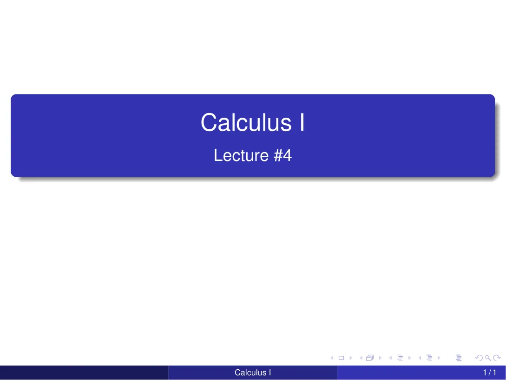
Title slide of Lecture 4. Recap in one sentence: last time we defined the derivative as a limit; today we learn the rules that let us avoid that limit.
Trang bìa Bài 4. Tóm tắt một câu: lần trước ta định nghĩa đạo hàm bằng giới hạn; hôm nay ta học các quy tắc giúp tránh phải tính giới hạn đó.
Roadmap of Chapter 2 · Lộ trình Chương 2
★ Context · Bổ trợ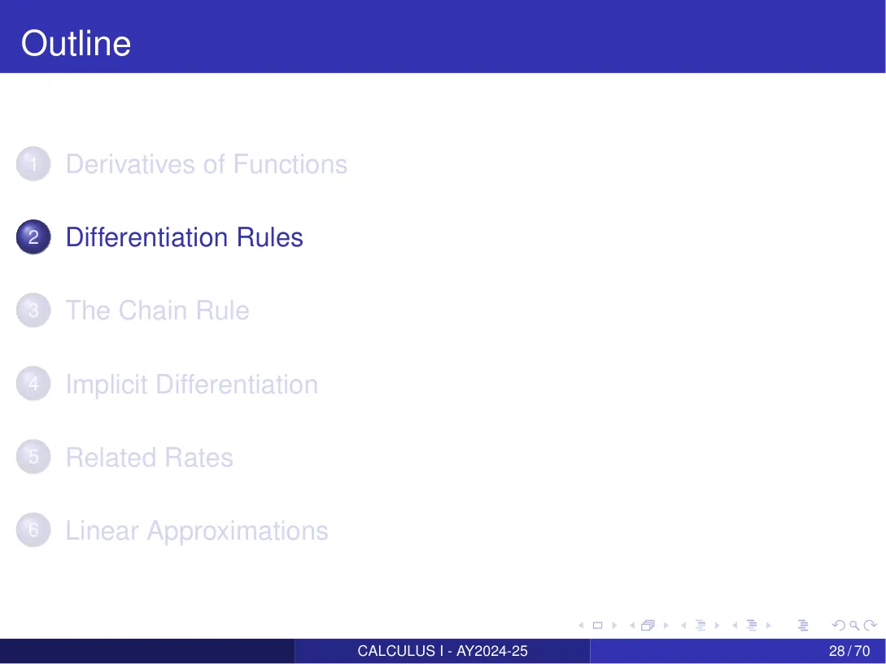
The outline of Chapter 2 again: we are now at part 2, differentiation rules, then the chain rule, implicit differentiation, related rates and linear approximations.
Lộ trình Chương 2: nay ta ở phần 2, các quy tắc đạo hàm, rồi đến quy tắc hàm hợp, đạo hàm ẩn, tốc độ liên quan và xấp xỉ tuyến tính.
The differentiation formulas · Các công thức đạo hàm
★★★ Core · Cốt lõi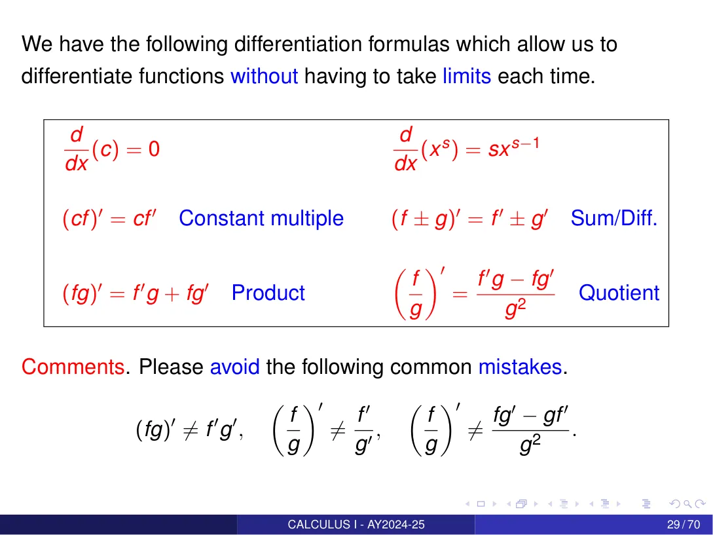
The table: $(c)'=0$; $(x^s)'=sx^{s-1}$; constant multiple $(cf)'=cf'$; sum and difference $(f\pm g)'=f'\pm g'$; product $(fg)'=f'g+fg'$; quotient $\left(\frac fg\right)'=\frac{f'g-fg'}{g^2}$. Warn about the three classic mistakes on the slide: $(fg)'\ne f'g'$, $\left(\frac fg\right)'\ne\frac{f'}{g'}$, and the quotient numerator order is $f'g-fg'$ (not $fg'-gf'$).
Bảng công thức: $(c)'=0$; $(x^s)'=sx^{s-1}$; hằng số nhân $(cf)'=cf'$; tổng và hiệu $(f\pm g)'=f'\pm g'$; tích $(fg)'=f'g+fg'$; thương $\left(\frac fg\right)'=\frac{f'g-fg'}{g^2}$. Cảnh báo ba lỗi kinh điển trên slide: $(fg)'\ne f'g'$, $\left(\frac fg\right)'\ne\frac{f'}{g'}$, và thứ tự tử số của thương là $f'g-fg'$ (không phải $fg'-gf'$).
Every derivative in the course is computed with these rules; the sign and order mistakes in the product and quotient rules cost the most marks.
Mọi đạo hàm trong môn đều tính bằng các quy tắc này; lỗi dấu và thứ tự ở quy tắc tích và thương làm mất điểm nhiều nhất.
Differentiate $f(x)=x^2\sin x$.
Tính đạo hàm của $f(x)=x^2\sin x$.
Answer and solution · Đáp án và lời giải
Answer · Đáp án: $f'(x)=2x\sin x+x^2\cos x$
Product rule: $(x^2)'\sin x+x^2(\sin x)'=2x\sin x+x^2\cos x$.
Quy tắc tích: $(x^2)'\sin x+x^2(\sin x)'=2x\sin x+x^2\cos x$.
Differentiate $g(x)=\dfrac{x^2+1}{x-1}$.
Tính đạo hàm của $g(x)=\dfrac{x^2+1}{x-1}$.
Answer and solution · Đáp án và lời giải
Answer · Đáp án: $g'(x)=\dfrac{x^2-2x-1}{(x-1)^2}$
Quotient rule: $\frac{2x(x-1)-(x^2+1)\cdot1}{(x-1)^2}=\frac{x^2-2x-1}{(x-1)^2}$.
Quy tắc thương: $\frac{2x(x-1)-(x^2+1)\cdot1}{(x-1)^2}=\frac{x^2-2x-1}{(x-1)^2}$.
Derivatives of the trigonometric functions · Đạo hàm của các hàm lượng giác
★★★ Core · Cốt lõi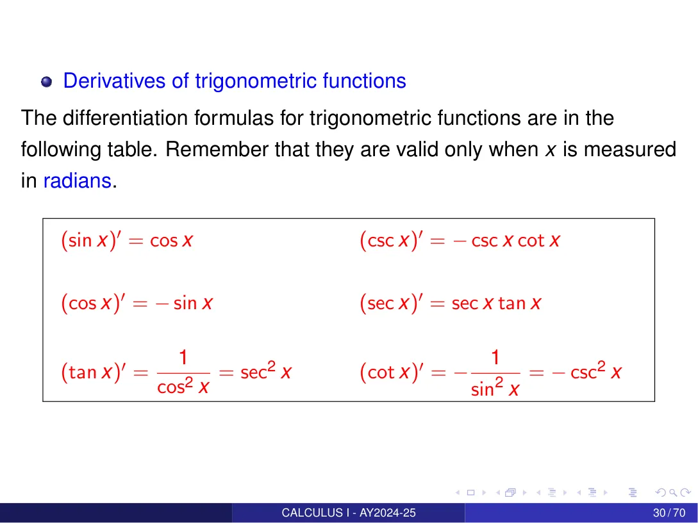
$(\sin x)'=\cos x$, $(\cos x)'=-\sin x$, $(\tan x)'=\sec^2x$, $(\cot x)'=-\csc^2x$, $(\sec x)'=\sec x\tan x$, $(\csc x)'=-\csc x\cot x$. Valid only when $x$ is in radians. Memory aid: the three "co-" functions ($\cos,\cot,\csc$) have a minus sign.
$(\sin x)'=\cos x$, $(\cos x)'=-\sin x$, $(\tan x)'=\sec^2x$, $(\cot x)'=-\csc^2x$, $(\sec x)'=\sec x\tan x$, $(\csc x)'=-\csc x\cot x$. Chỉ đúng khi $x$ tính bằng radian. Mẹo nhớ: ba hàm "co-" ($\cos,\cot,\csc$) đều có dấu trừ.
Differentiate $y=x^2\cos x-2x\sin x$.
Tính đạo hàm của $y=x^2\cos x-2x\sin x$.
Answer and solution · Đáp án và lời giải
Answer · Đáp án: $y'=-x^2\sin x-2\sin x$
$(x^2\cos x)'=2x\cos x-x^2\sin x$ and $(2x\sin x)'=2\sin x+2x\cos x$. Subtract: the $2x\cos x$ terms cancel.
$(x^2\cos x)'=2x\cos x-x^2\sin x$ và $(2x\sin x)'=2\sin x+2x\cos x$. Trừ nhau: các số hạng $2x\cos x$ triệt tiêu.
Show that $(\sec x)'=\sec x\tan x$ using $\sec x=\frac1{\cos x}$.
Chứng tỏ $(\sec x)'=\sec x\tan x$ bằng cách dùng $\sec x=\frac1{\cos x}$.
Answer and solution · Đáp án và lời giải
Answer · Đáp án: $(\sec x)'=\sec x\tan x$
Quotient rule: $\left(\frac1{\cos x}\right)'=\frac{0\cdot\cos x-1\cdot(-\sin x)}{\cos^2x}=\frac{\sin x}{\cos^2x}=\frac1{\cos x}\cdot\frac{\sin x}{\cos x}$.
Quy tắc thương: $\left(\frac1{\cos x}\right)'=\frac{0\cdot\cos x-1\cdot(-\sin x)}{\cos^2x}=\frac{\sin x}{\cos^2x}=\frac1{\cos x}\cdot\frac{\sin x}{\cos x}$.
Roadmap: the chain rule · Lộ trình: quy tắc đạo hàm hàm hợp
★ Context · Bổ trợ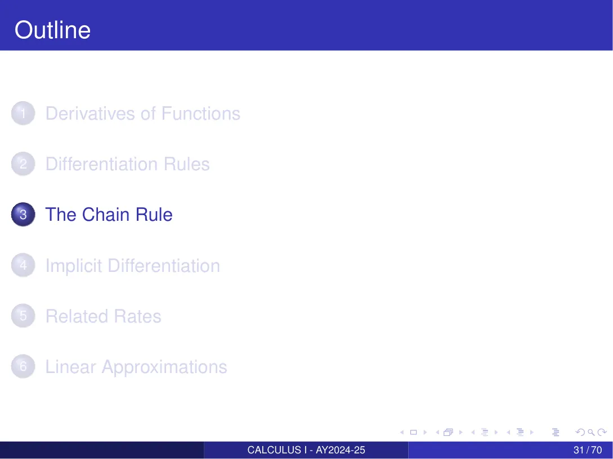
Outline: now part 3, the chain rule. Set the question: how do we differentiate a composite $f\circ g$ (Lecture 1, slide 13)?
Lộ trình: nay là phần 3, quy tắc đạo hàm hàm hợp. Đặt câu hỏi: làm sao đạo hàm một hàm hợp $f\circ g$ (Bài 1, slide 13)?
The Chain Rule · Quy tắc đạo hàm hàm hợp
★★★ Core · Cốt lõi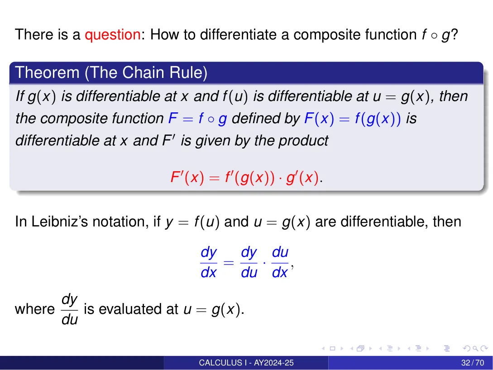
If $g$ is differentiable at $x$ and $f$ is differentiable at $g(x)$, then $F=f\circ g$ is differentiable and $F'(x)=f'(g(x))\cdot g'(x)$. In Leibniz form: $\frac{dy}{dx}=\frac{dy}{du}\cdot\frac{du}{dx}$, with $\frac{dy}{du}$ evaluated at $u=g(x)$. Say it as "derivative of the outside, left alone inside, times derivative of the inside".
Nếu $g$ khả vi tại $x$ và $f$ khả vi tại $g(x)$ thì $F=f\circ g$ khả vi và $F'(x)=f'(g(x))\cdot g'(x)$. Theo ký hiệu Leibniz: $\frac{dy}{dx}=\frac{dy}{du}\cdot\frac{du}{dx}$, với $\frac{dy}{du}$ tính tại $u=g(x)$. Đọc là "đạo hàm của hàm ngoài, giữ nguyên hàm trong, nhân đạo hàm của hàm trong".
The chain rule is in almost every derivative of a real function and underlies implicit differentiation, related rates and integration by substitution.
Quy tắc đạo hàm hàm hợp có mặt trong hầu hết mọi đạo hàm của hàm thực tế và là nền tảng của đạo hàm ẩn, tốc độ liên quan và tích phân đổi biến.
Differentiate $F(x)=(3x+1)^5$.
Tính đạo hàm của $F(x)=(3x+1)^5$.
Answer and solution · Đáp án và lời giải
Answer · Đáp án: $F'(x)=15(3x+1)^4$
Outer $u^5$, inner $3x+1$: $5(3x+1)^4\cdot3$.
Hàm ngoài $u^5$, hàm trong $3x+1$: $5(3x+1)^4\cdot3$.
Differentiate $G(x)=\sqrt{x^2+1}$.
Tính đạo hàm của $G(x)=\sqrt{x^2+1}$.
Answer and solution · Đáp án và lời giải
Answer · Đáp án: $G'(x)=\dfrac{x}{\sqrt{x^2+1}}$
Outer $\sqrt u$ with derivative $\frac1{2\sqrt u}$, inner $x^2+1$ with derivative $2x$: $\frac{2x}{2\sqrt{x^2+1}}$.
Hàm ngoài $\sqrt u$ có đạo hàm $\frac1{2\sqrt u}$, hàm trong $x^2+1$ có đạo hàm $2x$: $\frac{2x}{2\sqrt{x^2+1}}$.
The outer-inner principle · Nguyên tắc ngoài – trong
★★★ Core · Cốt lõi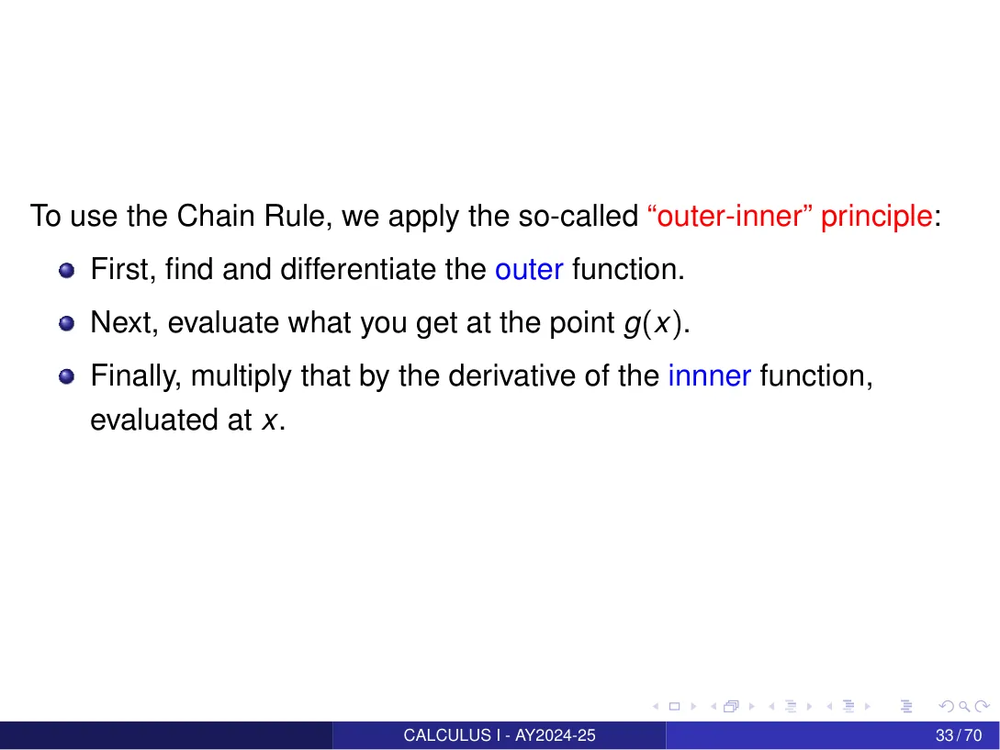
Three steps: (1) find and differentiate the outer function; (2) evaluate the result at the inner function $g(x)$; (3) multiply by the derivative of the inner function. The most common error is forgetting step 3.
Ba bước: (1) tìm và đạo hàm hàm ngoài; (2) tính kết quả đó tại hàm trong $g(x)$; (3) nhân với đạo hàm của hàm trong. Lỗi phổ biến nhất là quên bước 3.
Example: setting up $\sin\frac{x^2-1}{x^2+1}$ · Ví dụ: thiết lập $\sin\frac{x^2-1}{x^2+1}$
★★★ Core · Cốt lõi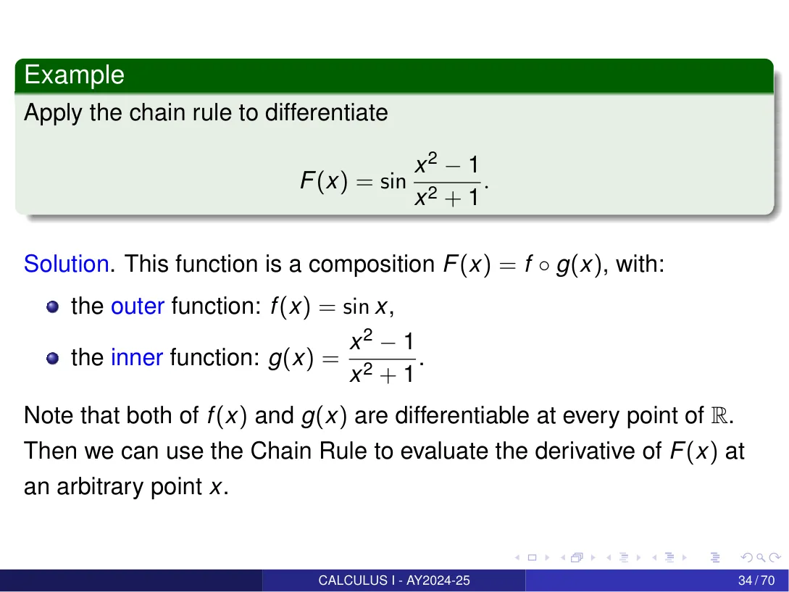
$F(x)=\sin\frac{x^2-1}{x^2+1}$ is a composition: outer $f(x)=\sin x$, inner $g(x)=\frac{x^2-1}{x^2+1}$. Both are differentiable everywhere, so the chain rule applies at every $x$. Always name the two layers before differentiating.
$F(x)=\sin\frac{x^2-1}{x^2+1}$ là hàm hợp: hàm ngoài $f(x)=\sin x$, hàm trong $g(x)=\frac{x^2-1}{x^2+1}$. Cả hai khả vi khắp nơi nên quy tắc hàm hợp dùng được tại mọi $x$. Luôn đặt tên hai lớp trước khi đạo hàm.
Example: the three steps carried out · Ví dụ: thực hiện ba bước
★★★ Core · Cốt lõi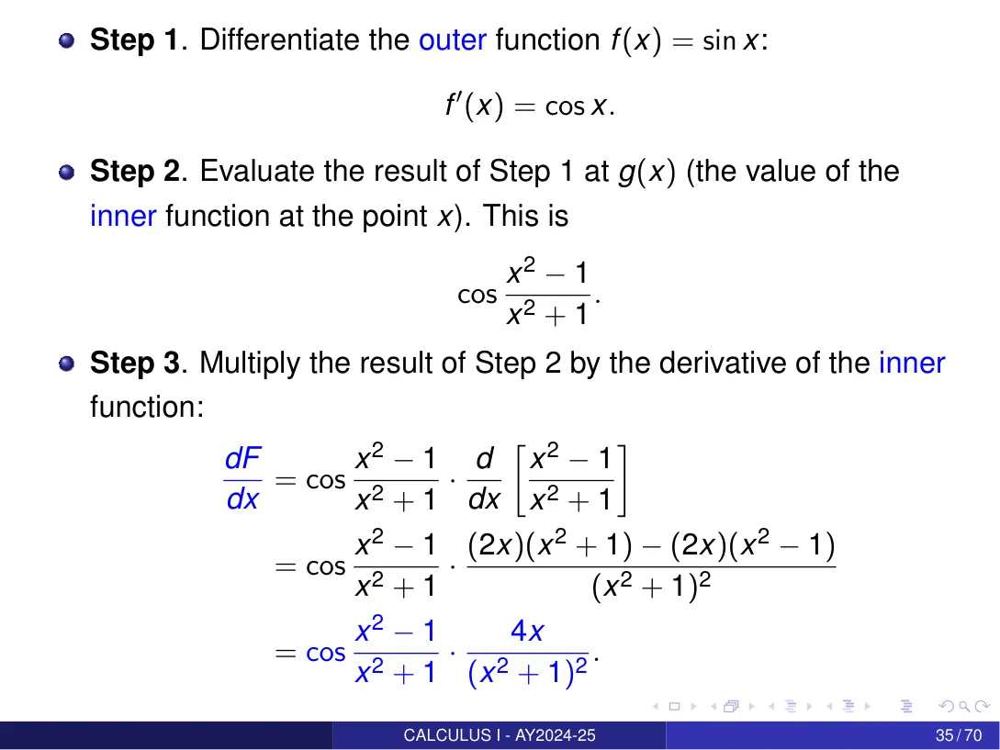
Step 1: $f'(x)=\cos x$. Step 2: evaluate at the inner function: $\cos\frac{x^2-1}{x^2+1}$. Step 3: multiply by $g'(x)$, found with the quotient rule: $\frac{2x(x^2+1)-2x(x^2-1)}{(x^2+1)^2}=\frac{4x}{(x^2+1)^2}$. Result: $F'(x)=\cos\frac{x^2-1}{x^2+1}\cdot\frac{4x}{(x^2+1)^2}$.
Bước 1: $f'(x)=\cos x$. Bước 2: tính tại hàm trong: $\cos\frac{x^2-1}{x^2+1}$. Bước 3: nhân với $g'(x)$, tìm bằng quy tắc thương: $\frac{2x(x^2+1)-2x(x^2-1)}{(x^2+1)^2}=\frac{4x}{(x^2+1)^2}$. Kết quả: $F'(x)=\cos\frac{x^2-1}{x^2+1}\cdot\frac{4x}{(x^2+1)^2}$.
Differentiate $H(x)=\cos\dfrac{x-1}{x+1}$.
Tính đạo hàm của $H(x)=\cos\dfrac{x-1}{x+1}$.
Answer and solution · Đáp án và lời giải
Answer · Đáp án: $H'(x)=-\sin\dfrac{x-1}{x+1}\cdot\dfrac2{(x+1)^2}$
Outer $\cos u$: $-\sin u$. Inner $u=\frac{x-1}{x+1}$: $u'=\frac{(x+1)-(x-1)}{(x+1)^2}=\frac2{(x+1)^2}$.
Hàm ngoài $\cos u$: $-\sin u$. Hàm trong $u=\frac{x-1}{x+1}$: $u'=\frac{(x+1)-(x-1)}{(x+1)^2}=\frac2{(x+1)^2}$.
The power rule combined with the chain rule · Quy tắc lũy thừa kết hợp quy tắc hàm hợp
★★★ Core · Cốt lõi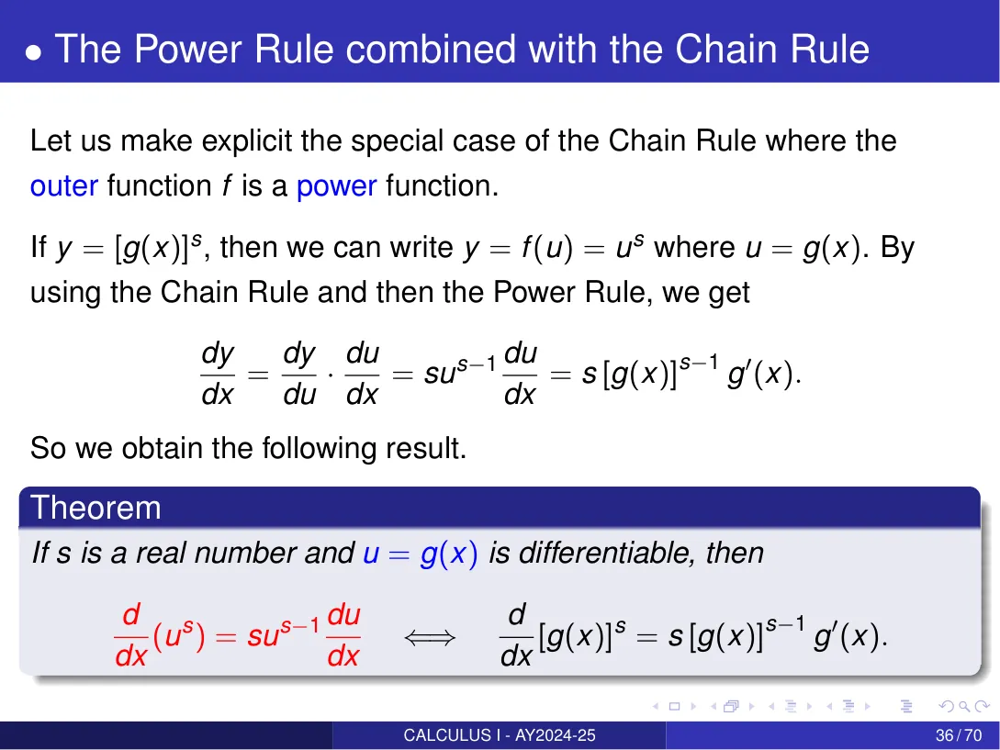
When the outer function is a power: $\frac d{dx}[g(x)]^s=s[g(x)]^{s-1}g'(x)$. This is the form we use most: bring down the exponent, lower it by one, multiply by the derivative of the base.
Khi hàm ngoài là lũy thừa: $\frac d{dx}[g(x)]^s=s[g(x)]^{s-1}g'(x)$. Đây là dạng dùng nhiều nhất: hạ số mũ xuống, giảm đi một, nhân với đạo hàm của cơ số.
Differentiate $y=(x^2+3x)^7$.
Tính đạo hàm của $y=(x^2+3x)^7$.
Answer and solution · Đáp án và lời giải
Answer · Đáp án: $y'=7(x^2+3x)^6(2x+3)$
Power rule with base $u=x^2+3x$: $7u^6u'$.
Quy tắc lũy thừa với cơ số $u=x^2+3x$: $7u^6u'$.
Examples: $\sin(x^2)$ versus $\sin^2x$ · Ví dụ: $\sin(x^2)$ và $\sin^2x$
★★★ Core · Cốt lõi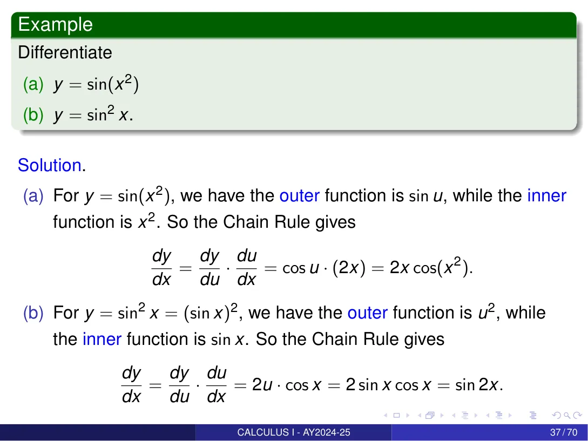
Same symbols, different structure. (a) $y=\sin(x^2)$: outer $\sin u$, inner $x^2$, so $y'=\cos(x^2)\cdot2x$. (b) $y=\sin^2x=(\sin x)^2$: outer $u^2$, inner $\sin x$, so $y'=2\sin x\cos x=\sin2x$. Ask the student to say which function is outside before writing anything.
Cùng ký hiệu, khác cấu trúc. (a) $y=\sin(x^2)$: hàm ngoài $\sin u$, hàm trong $x^2$, nên $y'=\cos(x^2)\cdot2x$. (b) $y=\sin^2x=(\sin x)^2$: hàm ngoài $u^2$, hàm trong $\sin x$, nên $y'=2\sin x\cos x=\sin2x$. Yêu cầu bạn nói hàm nào ở ngoài trước khi viết gì.
Differentiate $y=\sin(x^3)$ and $z=\sin^3x$.
Tính đạo hàm của $y=\sin(x^3)$ và $z=\sin^3x$.
Answer and solution · Đáp án và lời giải
Answer · Đáp án: $y'=3x^2\cos(x^3)$; $z'=3\sin^2x\cos x$
For $y$: outer $\sin$, inner $x^3$. For $z=(\sin x)^3$: outer cube, inner $\sin x$: $3\sin^2x\cdot\cos x$.
Với $y$: hàm ngoài $\sin$, hàm trong $x^3$. Với $z=(\sin x)^3$: hàm ngoài là lập phương, hàm trong $\sin x$: $3\sin^2x\cdot\cos x$.
Longer chains · Chuỗi dài hơn
★★ Important · Quan trọng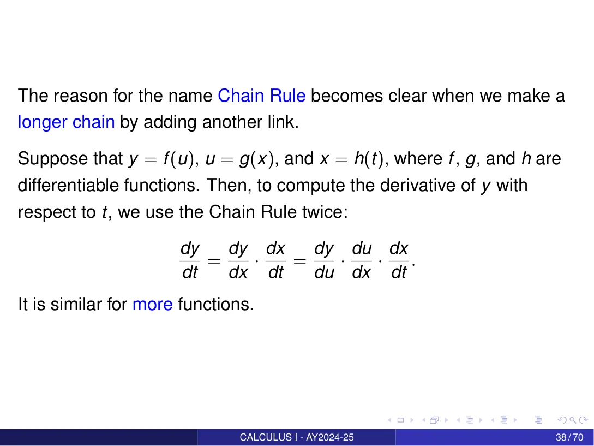
With three layers, $y=f(u)$, $u=g(x)$, $x=h(t)$: $\frac{dy}{dt}=\frac{dy}{du}\cdot\frac{du}{dx}\cdot\frac{dx}{dt}$. Work from the outside in, one layer at a time.
Với ba lớp, $y=f(u)$, $u=g(x)$, $x=h(t)$: $\frac{dy}{dt}=\frac{dy}{du}\cdot\frac{du}{dx}\cdot\frac{dx}{dt}$. Làm từ ngoài vào trong, từng lớp một.
Differentiate $y=\sin\left(\cos(x^2)\right)$.
Tính đạo hàm của $y=\sin\left(\cos(x^2)\right)$.
Answer and solution · Đáp án và lời giải
Answer · Đáp án: $y'=-2x\sin(x^2)\cos\left(\cos(x^2)\right)$
Outside $\sin$: $\cos(\cos x^2)$; middle $\cos u$: $-\sin(x^2)$; inside $x^2$: $2x$. Multiply the three.
Ngoài $\sin$: $\cos(\cos x^2)$; giữa $\cos u$: $-\sin(x^2)$; trong $x^2$: $2x$. Nhân ba đạo hàm lại.
Roadmap: implicit differentiation · Lộ trình: đạo hàm ẩn
★ Context · Bổ trợ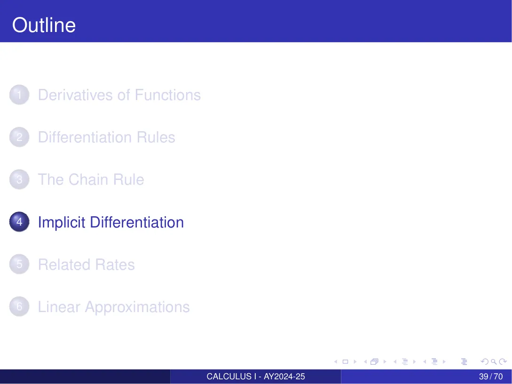
Outline, part 4. The question: what if $y$ is not given as a formula in $x$?
Lộ trình, phần 4. Câu hỏi: nếu $y$ không được cho bằng công thức theo $x$ thì sao?
Implicit functions · Hàm ẩn
★★★ Core · Cốt lõi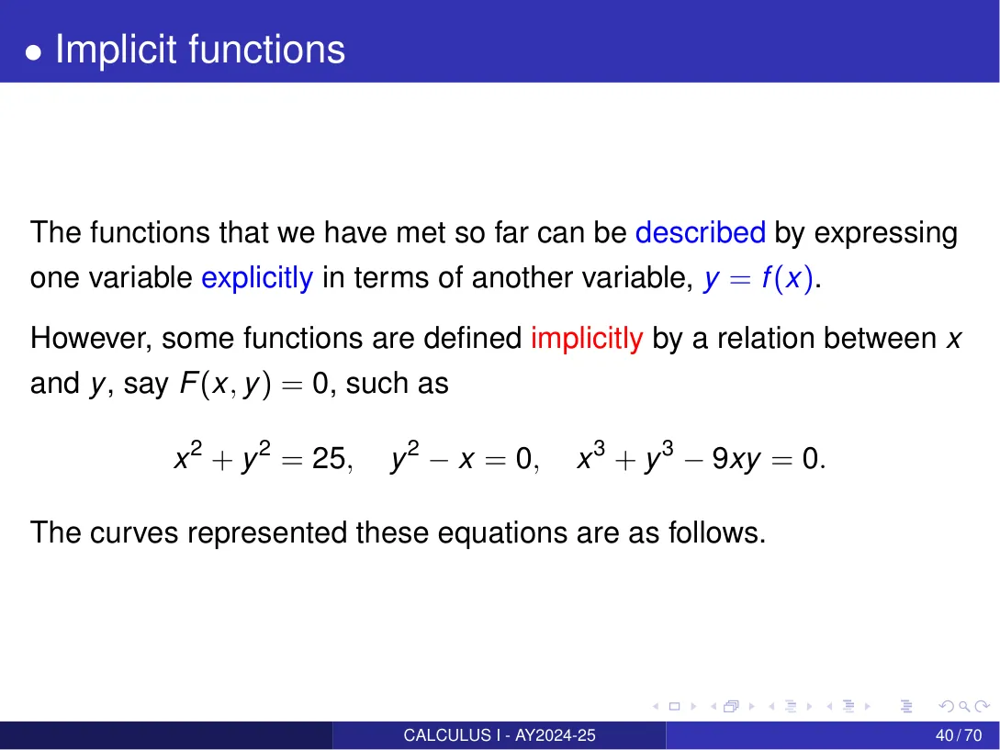
Until now $y=f(x)$ was explicit. Some functions are defined implicitly by a relation $F(x,y)=0$, e.g. $x^2+y^2=25$, $y^2-x=0$, $x^3+y^3-9xy=0$. The next slide shows their curves.
Đến giờ $y=f(x)$ là hàm tường minh. Một số hàm được xác định ẩn bởi một hệ thức $F(x,y)=0$, ví dụ $x^2+y^2=25$, $y^2-x=0$, $x^3+y^3-9xy=0$. Slide sau vẽ các đường cong đó.
The three curves · Ba đường cong
★★ Important · Quan trọng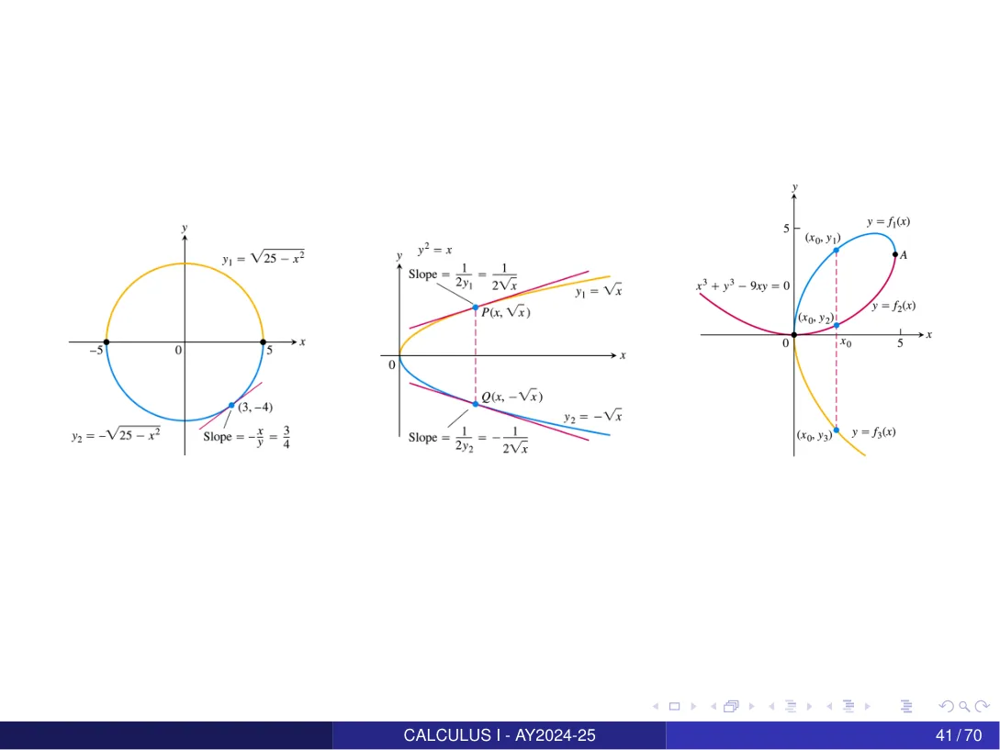
The picture: a circle, a sideways parabola and the folium of Descartes ($x^3+y^3=9xy$). None of them passes the vertical line test, so none is a single function $y=f(x)$.
Hình vẽ: một đường tròn, một parabol nằm ngang và lá Descartes ($x^3+y^3=9xy$). Không đường nào qua được phép thử đường thẳng đứng nên không đường nào là một hàm $y=f(x)$ duy nhất.
Solving for $y$ in some cases, and in others not · Giải theo $y$ trong một số trường hợp, và không giải được ở trường hợp khác
★★ Important · Quan trọng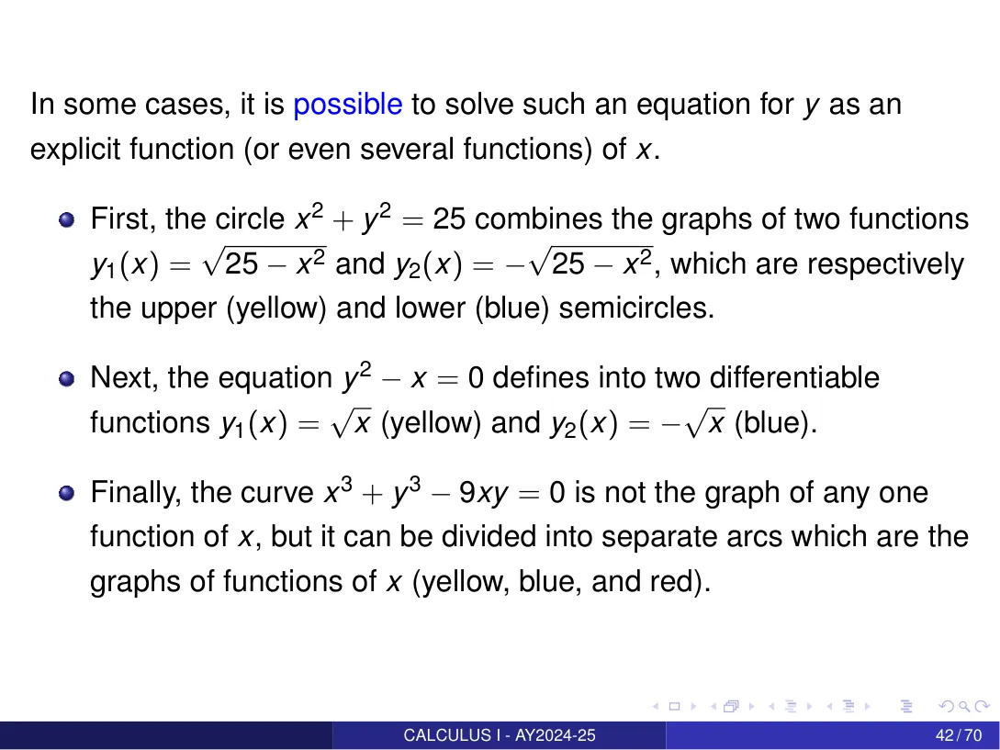
The circle splits into two functions, the upper semicircle $y=\sqrt{25-x^2}$ and the lower one $y=-\sqrt{25-x^2}$. The parabola gives $y=\pm\sqrt x$. The folium is not the graph of one function but can be cut into arcs that are. Local pieces are functions even when the whole curve is not.
Đường tròn tách thành hai hàm, nửa trên $y=\sqrt{25-x^2}$ và nửa dưới $y=-\sqrt{25-x^2}$. Parabol cho $y=\pm\sqrt x$. Lá Descartes không là đồ thị của một hàm nhưng có thể cắt thành các cung mà mỗi cung là đồ thị một hàm. Từng đoạn cục bộ là hàm ngay cả khi cả đường cong thì không.
The method of implicit differentiation · Phương pháp đạo hàm ẩn
★★★ Core · Cốt lõi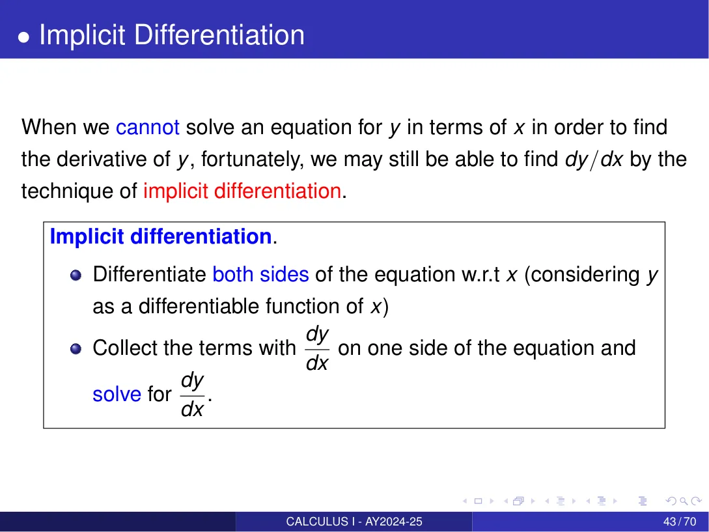
When we cannot (or do not want to) solve for $y$: (1) differentiate both sides with respect to $x$, treating $y$ as a differentiable function of $x$ (so every $y$-term needs the chain rule, giving a factor $\frac{dy}{dx}$); (2) collect the terms containing $\frac{dy}{dx}$ on one side and solve for it.
Khi ta không thể (hoặc không muốn) giải theo $y$: (1) lấy đạo hàm hai vế theo $x$, coi $y$ là hàm khả vi của $x$ (nên mọi số hạng chứa $y$ cần quy tắc hàm hợp, sinh ra thừa số $\frac{dy}{dx}$); (2) gom các số hạng chứa $\frac{dy}{dx}$ về một vế rồi giải theo nó.
Implicit differentiation is the key step of related rates and gives tangents to curves that are not graphs; "find $y'$ if ..." is a standard exam question.
Đạo hàm ẩn là bước then chốt của tốc độ liên quan và cho tiếp tuyến của các đường cong không phải đồ thị hàm; "tìm $y'$ nếu ..." là câu hỏi thi chuẩn.
Example (a): $\frac{dy}{dx}$ for the circle · Ví dụ (a): $\frac{dy}{dx}$ cho đường tròn
★★★ Core · Cốt lõi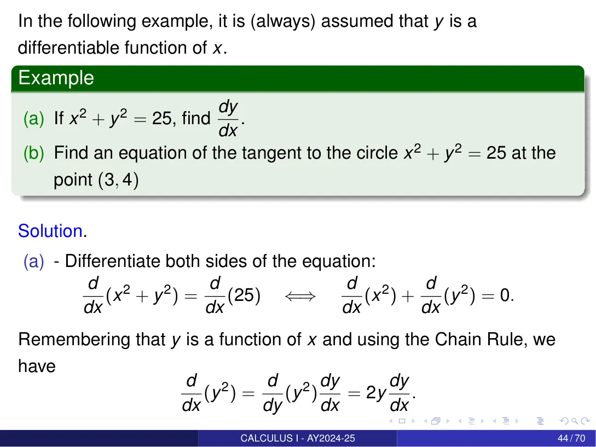
Differentiate $x^2+y^2=25$: $\frac d{dx}(x^2)+\frac d{dx}(y^2)=0$. The key: $\frac d{dx}(y^2)=\frac d{dy}(y^2)\cdot\frac{dy}{dx}=2y\frac{dy}{dx}$ by the chain rule. So $2x+2y\frac{dy}{dx}=0$.
Đạo hàm $x^2+y^2=25$: $\frac d{dx}(x^2)+\frac d{dx}(y^2)=0$. Điểm mấu chốt: $\frac d{dx}(y^2)=\frac d{dy}(y^2)\cdot\frac{dy}{dx}=2y\frac{dy}{dx}$ theo quy tắc hàm hợp. Vậy $2x+2y\frac{dy}{dx}=0$.
Example: solving for $y'$ and the tangent at $(3,4)$ · Ví dụ: giải $y'$ và tiếp tuyến tại $(3,4)$
★★★ Core · Cốt lõi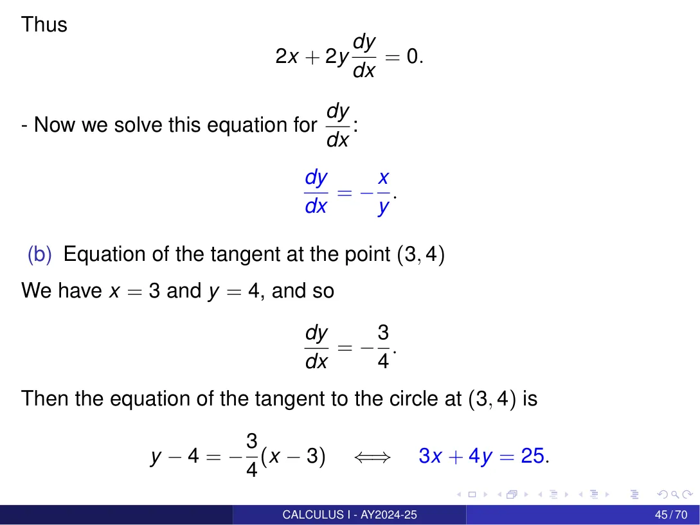
Solve: $\frac{dy}{dx}=-\frac xy$. (b) At $(3,4)$: $\frac{dy}{dx}=-\frac34$, so the tangent is $y-4=-\frac34(x-3)$, i.e. $3x+4y=25$. Check with geometry: the radius to $(3,4)$ has slope $\frac43$ and the tangent is perpendicular to it, slope $-\frac34$. ✓
Giải: $\frac{dy}{dx}=-\frac xy$. (b) Tại $(3,4)$: $\frac{dy}{dx}=-\frac34$, nên tiếp tuyến là $y-4=-\frac34(x-3)$, tức $3x+4y=25$. Kiểm tra bằng hình học: bán kính tới $(3,4)$ có hệ số góc $\frac43$ và tiếp tuyến vuông góc với nó, hệ số góc $-\frac34$. ✓
Find the tangent to $x^2+y^2=25$ at $(-4,3)$.
Tìm tiếp tuyến của $x^2+y^2=25$ tại $(-4,3)$.
Answer and solution · Đáp án và lời giải
Answer · Đáp án: $4x-3y+25=0$
$\frac{dy}{dx}=-\frac xy=\frac43$. Tangent: $y-3=\frac43(x+4)$, i.e. $4x-3y+25=0$ (check: $-16-9+25=0$).
$\frac{dy}{dx}=-\frac xy=\frac43$. Tiếp tuyến: $y-3=\frac43(x+4)$, tức $4x-3y+25=0$ (kiểm tra: $-16-9+25=0$).
Find $\frac{dy}{dx}$ at $(3,3)$ on the curve $x^3+y^3=6xy$.
Tìm $\frac{dy}{dx}$ tại $(3,3)$ trên đường cong $x^3+y^3=6xy$.
Answer and solution · Đáp án và lời giải
Answer · Đáp án: $-1$
Differentiate: $3x^2+3y^2y'=6y+6xy'$, so $y'=\frac{6y-3x^2}{3y^2-6x}=\frac{2y-x^2}{y^2-2x}$. At $(3,3)$: $\frac{6-9}{9-6}=-1$ (the point lies on the curve: $27+27=54=6\cdot9$).
Đạo hàm: $3x^2+3y^2y'=6y+6xy'$, nên $y'=\frac{6y-3x^2}{3y^2-6x}=\frac{2y-x^2}{y^2-2x}$. Tại $(3,3)$: $\frac{6-9}{9-6}=-1$ (điểm thuộc đường cong: $27+27=54=6\cdot9$).
Roadmap: related rates · Lộ trình: tốc độ biến thiên liên quan
★ Context · Bổ trợ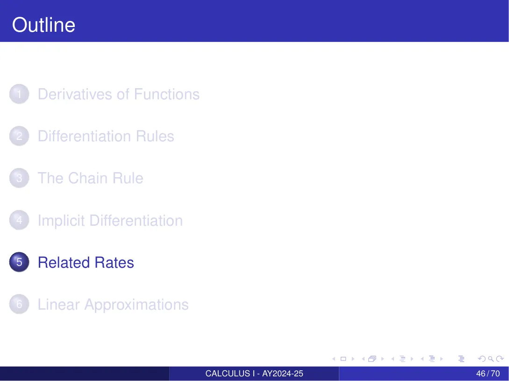
Outline, part 5: related rates.
Lộ trình, phần 5: tốc độ biến thiên liên quan.
Related rates: the idea · Tốc độ liên quan: ý tưởng
★★★ Core · Cốt lõi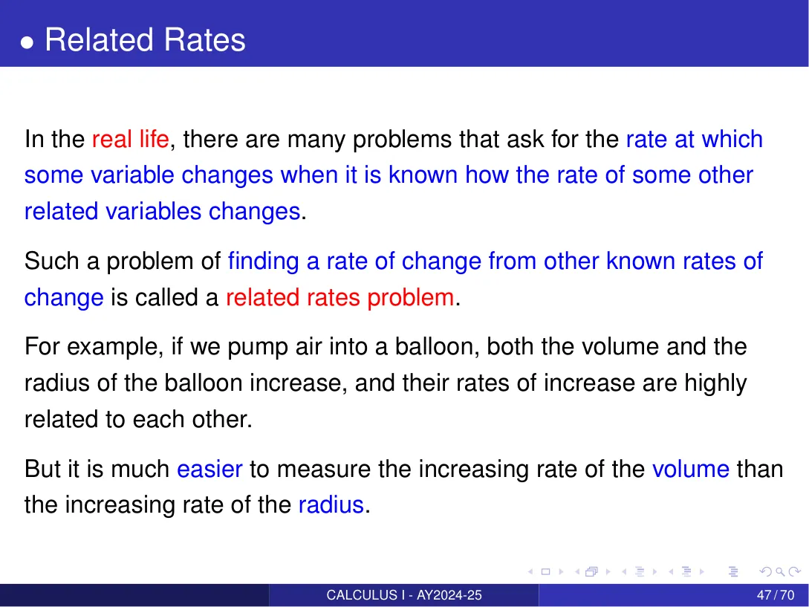
Many problems give the rate of change of one quantity and ask for the rate of another that is linked to it. Example: pumping air into a balloon increases both its volume and its radius; the volume rate is easy to measure, the radius rate is what we want. This is a related rates problem.
Nhiều bài toán cho tốc độ thay đổi của một đại lượng và hỏi tốc độ của một đại lượng khác có liên hệ với nó. Ví dụ: bơm khí vào quả bóng làm tăng cả thể tích lẫn bán kính; tốc độ thể tích dễ đo, tốc độ bán kính mới là điều cần tìm. Đây là bài toán tốc độ liên quan.
The procedure · Quy trình
★★★ Core · Cốt lõi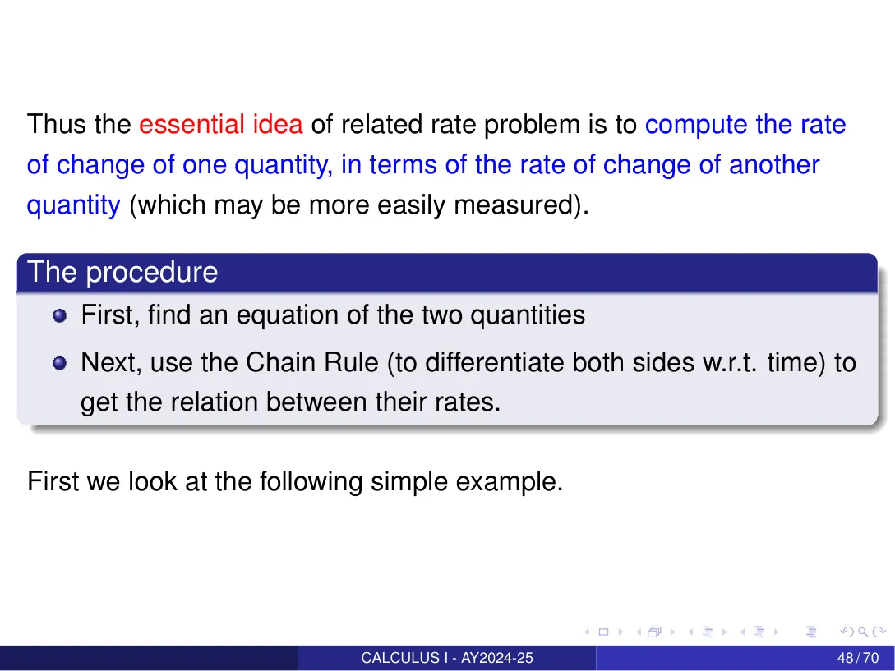
Two steps: (1) find an equation linking the quantities; (2) differentiate both sides with respect to time $t$ using the chain rule to get a relation between the rates. Practical habit: draw a picture, name the variables, write what is given and what is wanted, and substitute numbers only after differentiating.
Hai bước: (1) tìm một phương trình liên hệ các đại lượng; (2) đạo hàm hai vế theo thời gian $t$ bằng quy tắc hàm hợp để có hệ thức giữa các tốc độ. Thói quen thực hành: vẽ hình, đặt tên biến, ghi cái đã cho và cái cần tìm, và chỉ thay số sau khi đã đạo hàm.
The most frequent mistake is substituting the numbers before differentiating, which turns a variable into a constant and kills its rate.
Lỗi thường gặp nhất là thay số trước khi đạo hàm, biến một đại lượng thành hằng số và làm mất tốc độ của nó.
Example (Tom and Jerry): the picture · Ví dụ (Tom và Jerry): hình vẽ
★ Context · Bổ trợTom and Jerry: the problem · Tom và Jerry: đề bài
★★★ Core · Cốt lõi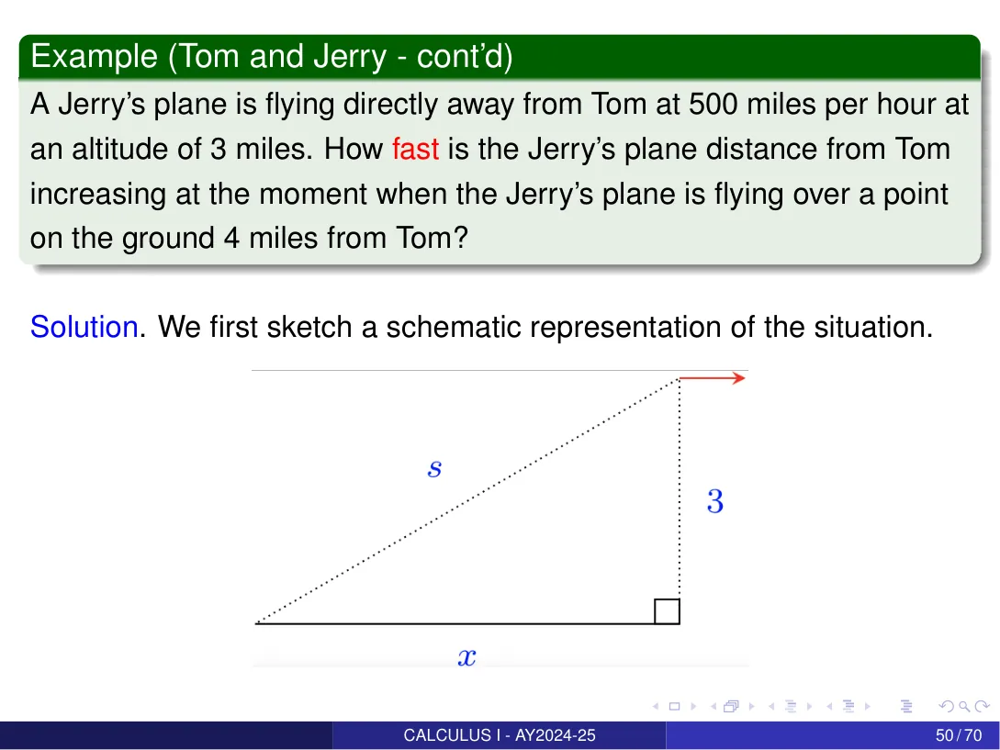
Jerry's plane flies directly away from Tom at $500$ mph at altitude $3$ miles. How fast is the distance from Tom increasing when the plane is above a point $4$ miles from Tom? Make the sketch: horizontal leg $x$, vertical leg $3$ (constant!), hypotenuse $s$.
Máy bay của Jerry bay thẳng ra xa Tom với tốc độ $500$ mph ở độ cao $3$ dặm. Khoảng cách tới Tom tăng nhanh thế nào khi máy bay ở trên điểm cách Tom $4$ dặm? Vẽ phác: cạnh ngang $x$, cạnh đứng $3$ (không đổi!), cạnh huyền $s$.
Tom and Jerry: what is given and what is asked · Tom và Jerry: cái đã cho và cái cần tìm
★★★ Core · Cốt lõi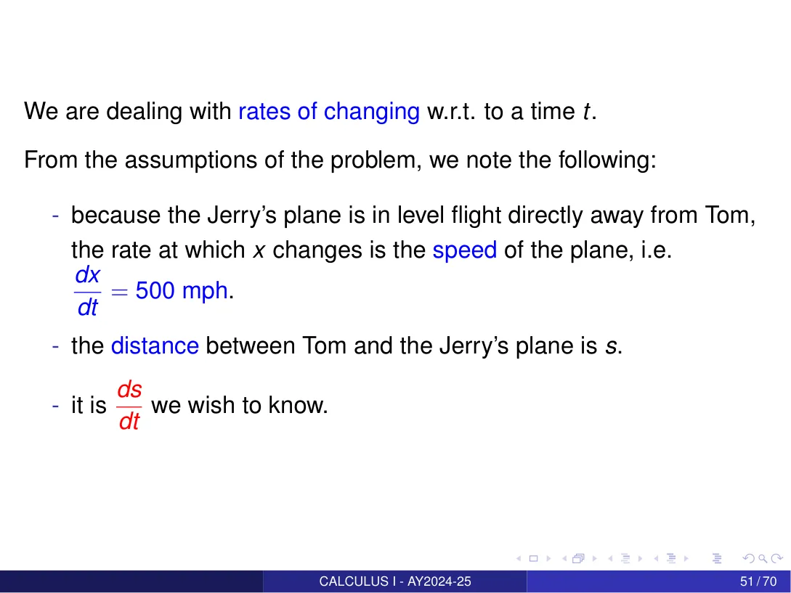
Translate the words: the plane flies level, so $\frac{dx}{dt}=500$ mph; $s$ is the distance from Tom; we want $\frac{ds}{dt}$. Writing this list is half of the solution.
Dịch lời văn sang ký hiệu: máy bay bay ngang nên $\frac{dx}{dt}=500$ mph; $s$ là khoảng cách tới Tom; cần tìm $\frac{ds}{dt}$. Viết ra danh sách này đã là một nửa lời giải.
Tom and Jerry: the solution · Tom và Jerry: lời giải
★★★ Core · Cốt lõi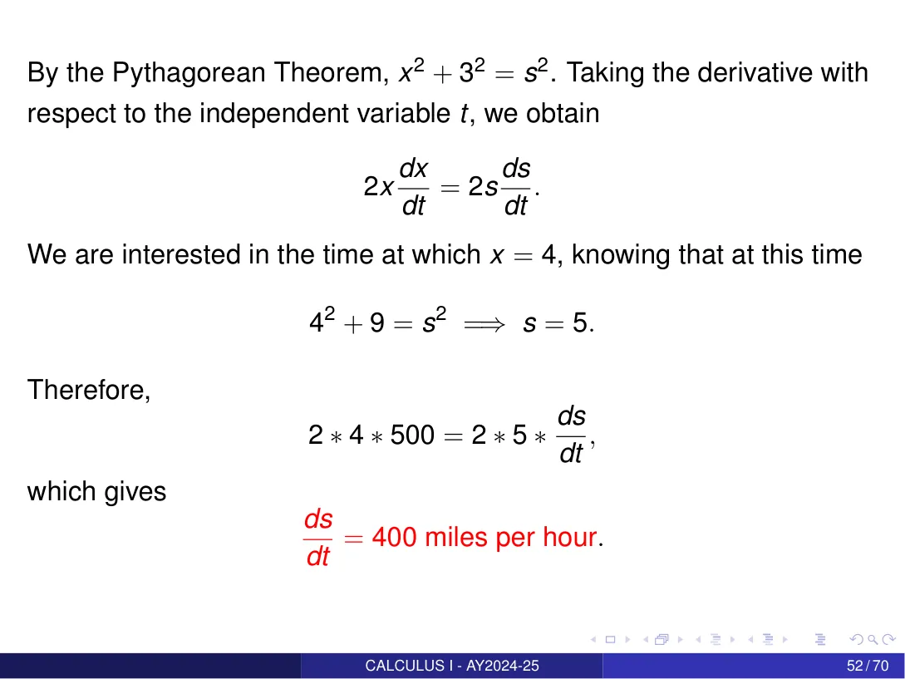
Pythagoras: $x^2+3^2=s^2$. Differentiate in $t$: $2x\frac{dx}{dt}=2s\frac{ds}{dt}$. Only now substitute: $x=4$ gives $s=5$, so $2\cdot4\cdot500=2\cdot5\cdot\frac{ds}{dt}$ and $\frac{ds}{dt}=400$ mph. (Less than $500$ because part of the plane's motion is not along the line from Tom.)
Pytago: $x^2+3^2=s^2$. Đạo hàm theo $t$: $2x\frac{dx}{dt}=2s\frac{ds}{dt}$. Bây giờ mới thay số: $x=4$ cho $s=5$, nên $2\cdot4\cdot500=2\cdot5\cdot\frac{ds}{dt}$ và $\frac{ds}{dt}=400$ mph. (Nhỏ hơn $500$ vì một phần chuyển động của máy bay không nằm dọc theo đường nhìn từ Tom.)
A $5$ m ladder leans on a wall. Its foot slides away at $1$ m/s. How fast does the top slide down when the foot is $3$ m from the wall?
Một cái thang dài $5$ m dựa vào tường. Chân thang trượt ra xa với tốc độ $1$ m/s. Đỉnh thang trượt xuống nhanh thế nào khi chân thang cách tường $3$ m?
Answer and solution · Đáp án và lời giải
Answer · Đáp án: $\dfrac34$ m/s downwards
$x^2+y^2=25$, so $2xx'+2yy'=0$. At $x=3$: $y=4$. Then $y'=-\frac{xx'}y=-\frac{3\cdot1}4=-\frac34$ m/s (negative: the top moves down).
$x^2+y^2=25$ nên $2xx'+2yy'=0$. Tại $x=3$: $y=4$. Khi đó $y'=-\frac{xx'}y=-\frac{3\cdot1}4=-\frac34$ m/s (âm: đỉnh thang đi xuống).
Air is pumped into a spherical balloon at $100\ \mathrm{cm^3/s}$. How fast is the radius growing when $r=10$ cm?
Khí được bơm vào quả bóng hình cầu với tốc độ $100\ \mathrm{cm^3/s}$. Bán kính tăng nhanh thế nào khi $r=10$ cm?
Answer and solution · Đáp án và lời giải
Answer · Đáp án: $\dfrac1{4\pi}\approx0.0796$ cm/s
$V=\frac43\pi r^3$, so $\frac{dV}{dt}=4\pi r^2\frac{dr}{dt}$. Then $100=4\pi\cdot100\cdot\frac{dr}{dt}$ and $\frac{dr}{dt}=\frac1{4\pi}$.
$V=\frac43\pi r^3$ nên $\frac{dV}{dt}=4\pi r^2\frac{dr}{dt}$. Khi đó $100=4\pi\cdot100\cdot\frac{dr}{dt}$ và $\frac{dr}{dt}=\frac1{4\pi}$.
Example (The Fast and the Furious): the picture · Ví dụ (Fast and Furious): hình vẽ
★ Context · Bổ trợThe Fast and the Furious: the problem · The Fast and the Furious: đề bài
★★★ Core · Cốt lõi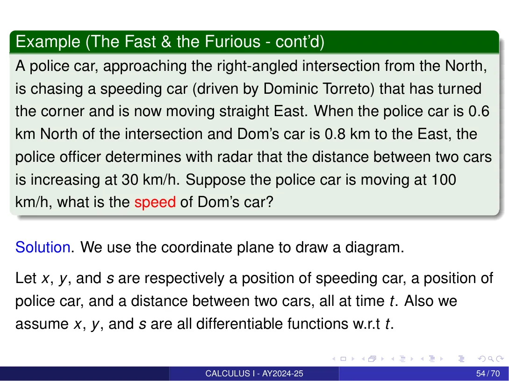
A police car approaches a right-angled intersection from the North chasing a car that has turned and is moving East. When the police car is $0.6$ km north of the intersection and the other car is $0.8$ km east, radar shows the distance between them growing at $30$ km/h. The police car moves at $100$ km/h: how fast is the other car? Let $x$ be the speeding car's position, $y$ the police car's, $s$ the distance.
Xe cảnh sát tiến tới một ngã tư vuông góc từ phía Bắc để đuổi một xe đã rẽ và đang chạy về hướng Đông. Khi xe cảnh sát cách ngã tư $0.6$ km về phía bắc và xe kia cách $0.8$ km về phía đông, radar cho thấy khoảng cách giữa hai xe tăng $30$ km/h. Xe cảnh sát chạy $100$ km/h: xe kia chạy nhanh bao nhiêu? Gọi $x$ là vị trí xe bị đuổi, $y$ là vị trí xe cảnh sát, $s$ là khoảng cách.
The Fast and the Furious: the diagram · The Fast and the Furious: sơ đồ
★★ Important · Quan trọng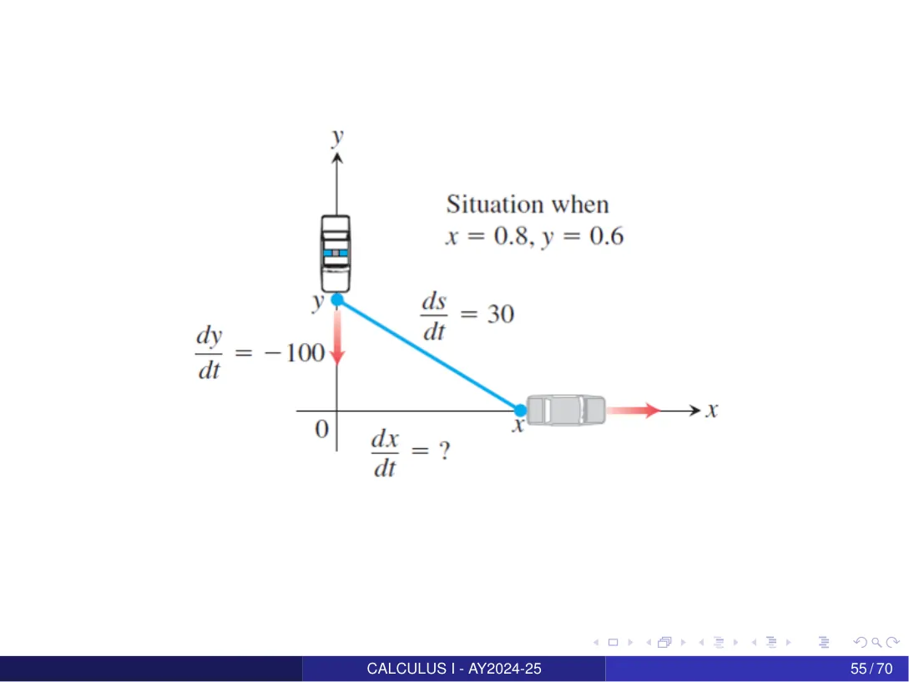
The diagram in the coordinate plane: the speeding car on the $x$-axis, the police car on the $y$-axis, the segment between them of length $s$. Both $x$ and $y$ change with time; only the right angle is fixed.
Sơ đồ trong mặt phẳng tọa độ: xe bị đuổi trên trục $x$, xe cảnh sát trên trục $y$, đoạn nối hai xe có độ dài $s$. Cả $x$ và $y$ thay đổi theo thời gian; chỉ có góc vuông là cố định.
The Fast and the Furious: the equation and its derivative · The Fast and the Furious: phương trình và đạo hàm của nó
★★★ Core · Cốt lõi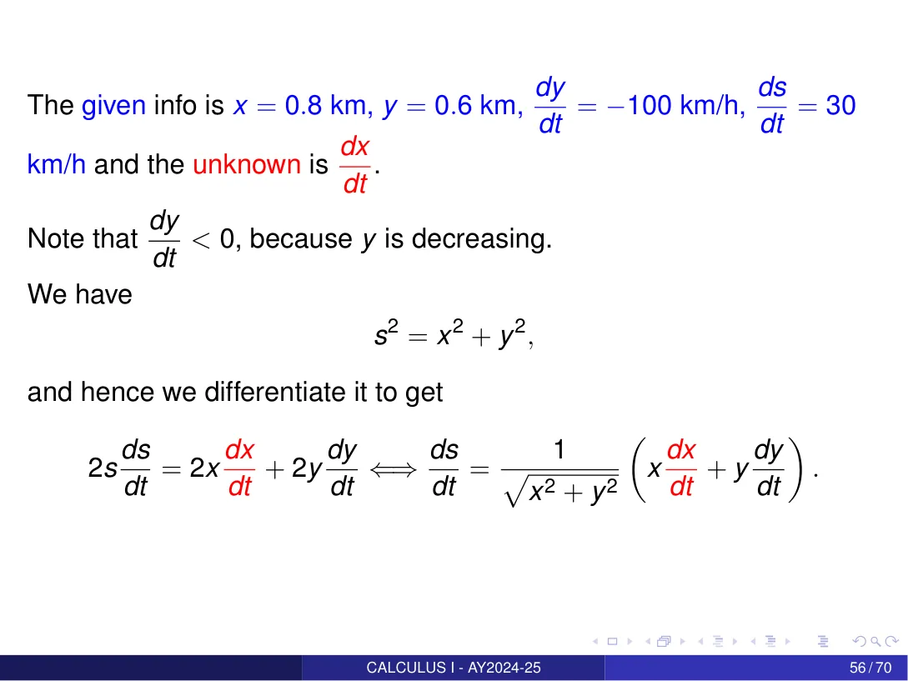
Given: $x=0.8$, $y=0.6$, $\frac{dy}{dt}=-100$ (negative: the police car is getting closer to the intersection), $\frac{ds}{dt}=30$. Unknown $\frac{dx}{dt}$. Equation $s^2=x^2+y^2$; differentiating, $2s\frac{ds}{dt}=2x\frac{dx}{dt}+2y\frac{dy}{dt}$, i.e. $\frac{ds}{dt}=\frac1{\sqrt{x^2+y^2}}\left(x\frac{dx}{dt}+y\frac{dy}{dt}\right)$.
Đã cho: $x=0.8$, $y=0.6$, $\frac{dy}{dt}=-100$ (âm: xe cảnh sát đang tiến lại gần ngã tư), $\frac{ds}{dt}=30$. Ẩn là $\frac{dx}{dt}$. Phương trình $s^2=x^2+y^2$; đạo hàm: $2s\frac{ds}{dt}=2x\frac{dx}{dt}+2y\frac{dy}{dt}$, tức $\frac{ds}{dt}=\frac1{\sqrt{x^2+y^2}}\left(x\frac{dx}{dt}+y\frac{dy}{dt}\right)$.
The Fast and the Furious: the answer, 112.5 km/h · The Fast and the Furious: đáp số 112.5 km/h
★★★ Core · Cốt lõi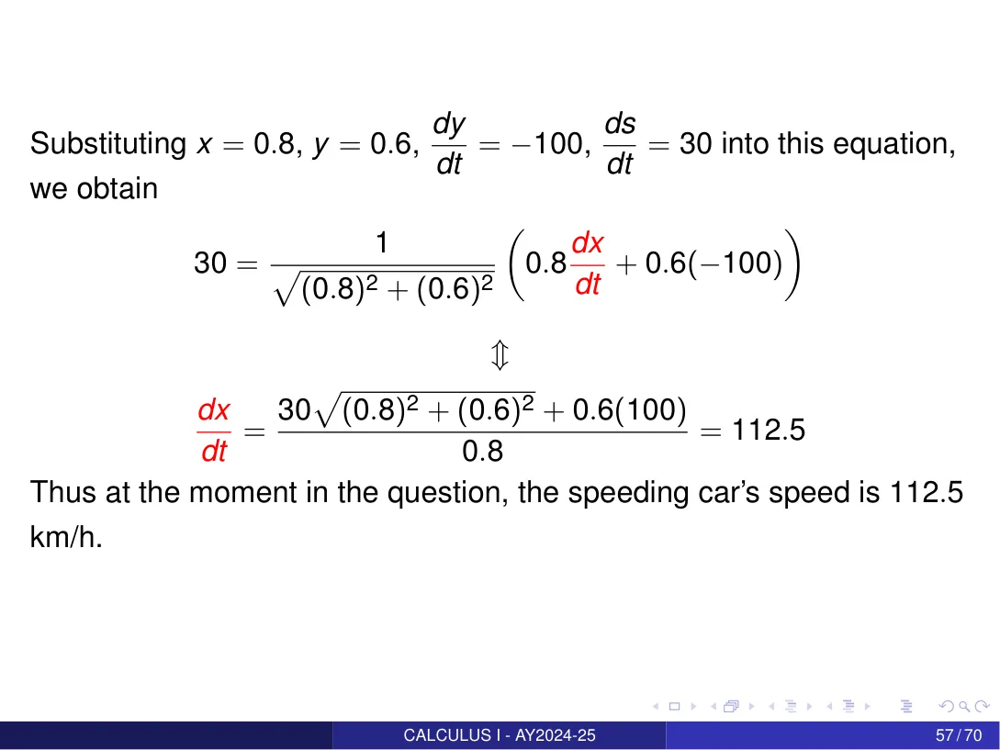
Substitute: $s=\sqrt{0.8^2+0.6^2}=1$, so $30=0.8\frac{dx}{dt}+0.6(-100)$, hence $\frac{dx}{dt}=\frac{30+60}{0.8}=112.5$ km/h. The speeding car goes $112.5$ km/h. Check the sign logic: the gap grows by $30$ even though the police car closes in at $100$, so the other car must be fast.
Thay số: $s=\sqrt{0.8^2+0.6^2}=1$, nên $30=0.8\frac{dx}{dt}+0.6(-100)$, suy ra $\frac{dx}{dt}=\frac{30+60}{0.8}=112.5$ km/h. Xe bị đuổi chạy $112.5$ km/h. Kiểm tra logic dấu: khoảng cách vẫn tăng $30$ dù xe cảnh sát áp sát với $100$, nên xe kia phải chạy nhanh.
Check the slide's answer: solve $30=\dfrac{0.8\,x'+0.6(-100)}{\sqrt{0.8^2+0.6^2}}$ for $x'$.
Kiểm tra đáp số trên slide: giải $30=\dfrac{0.8\,x'+0.6(-100)}{\sqrt{0.8^2+0.6^2}}$ theo $x'$.
Answer and solution · Đáp án và lời giải
Answer · Đáp án: $x'=112.5$ km/h
$\sqrt{0.64+0.36}=1$, so $30=0.8x'-60$ and $x'=\frac{90}{0.8}=112.5$.
$\sqrt{0.64+0.36}=1$, nên $30=0.8x'-60$ và $x'=\frac{90}{0.8}=112.5$.
Roadmap: linear approximations · Lộ trình: xấp xỉ tuyến tính
★ Context · Bổ trợ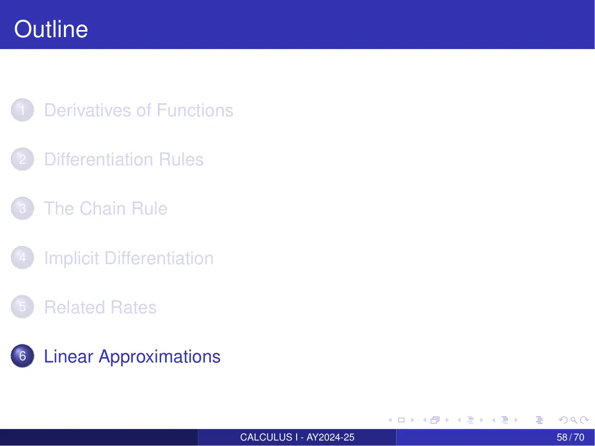
Outline, part 6, the last part of the chapter.
Lộ trình, phần 6, phần cuối của chương.
Linearization: the curve looks like its tangent · Tuyến tính hóa: đường cong trông giống tiếp tuyến
★★★ Core · Cốt lõi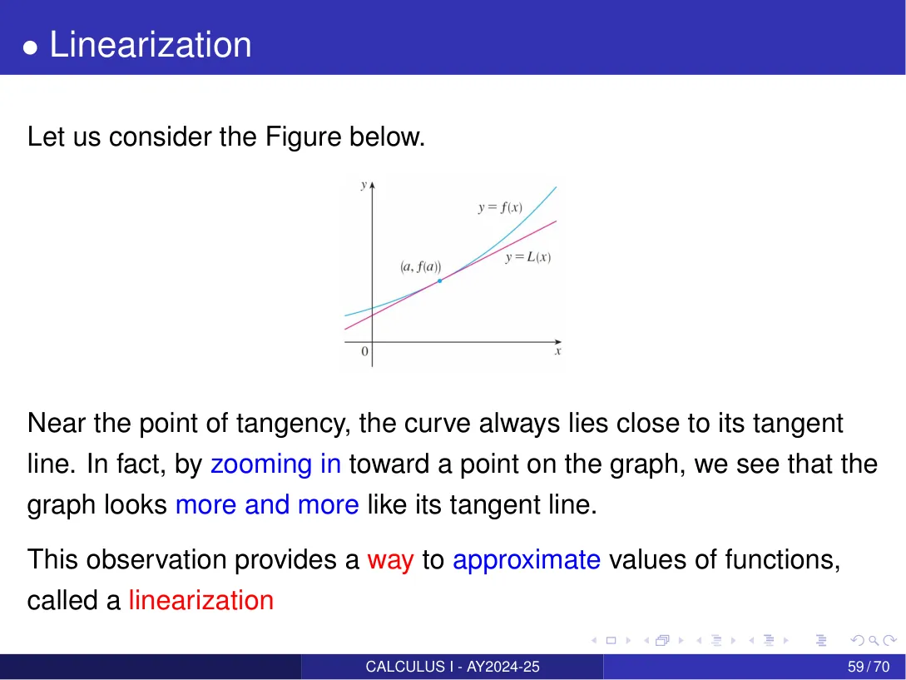
Zoom in on a point of a graph: the curve looks more and more like its tangent line. That observation gives a way to approximate function values, called a linearization.
Phóng to quanh một điểm của đồ thị: đường cong trông ngày càng giống tiếp tuyến của nó. Quan sát này cho cách xấp xỉ giá trị hàm số, gọi là tuyến tính hóa.
Using the tangent line as an approximation · Dùng tiếp tuyến làm xấp xỉ
★★★ Core · Cốt lõi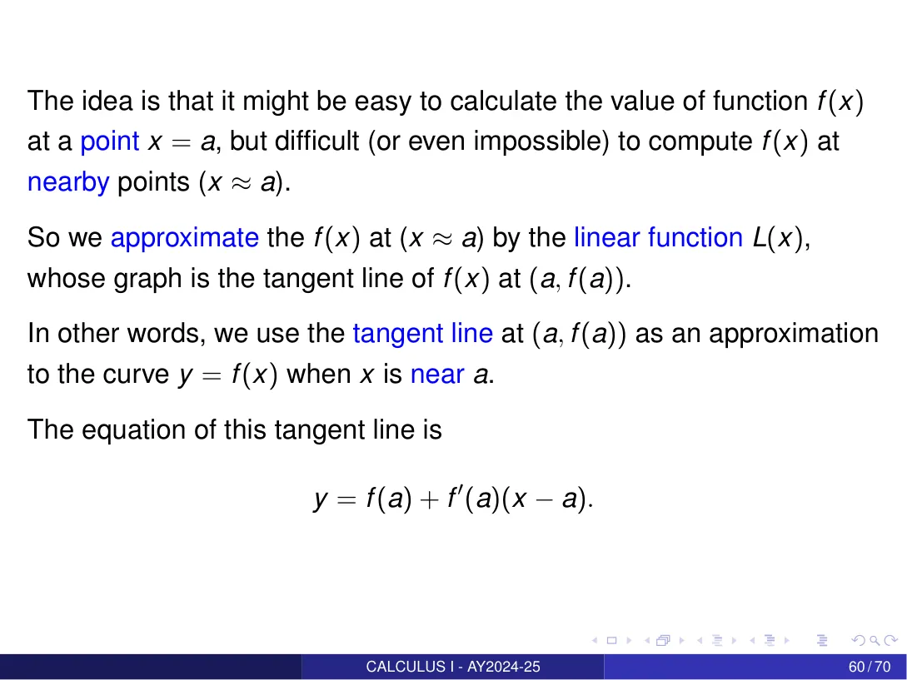
Idea: $f(a)$ may be easy while $f(x)$ at a nearby $x$ is hard. Replace $f$ near $a$ by the tangent line $y=f(a)+f'(a)(x-a)$. Example: $\sqrt{4.05}$ is hard by hand, but $\sqrt4=2$ is easy.
Ý tưởng: $f(a)$ có thể dễ tính trong khi $f(x)$ ở $x$ gần đó thì khó. Thay $f$ gần $a$ bằng tiếp tuyến $y=f(a)+f'(a)(x-a)$. Ví dụ: $\sqrt{4.05}$ khó tính tay nhưng $\sqrt4=2$ thì dễ.
Definition of the linearization · Định nghĩa tuyến tính hóa
★★★ Core · Cốt lõi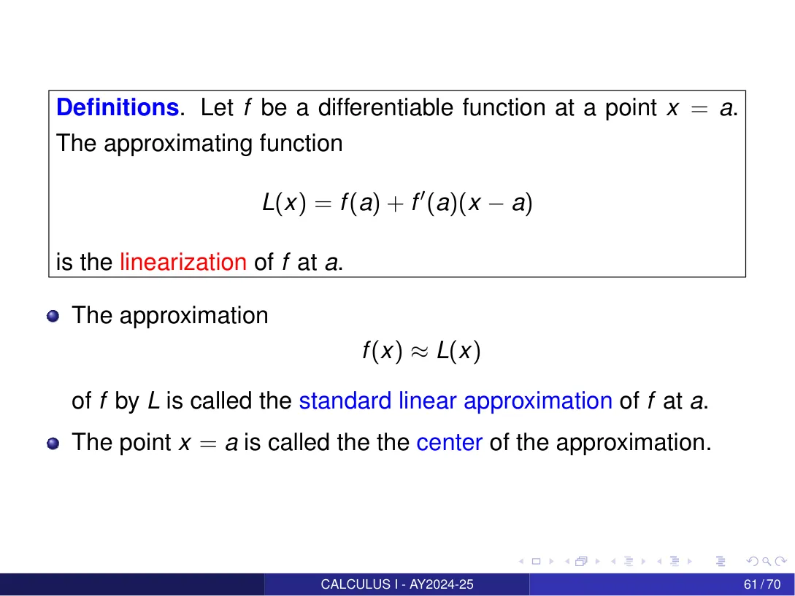
$L(x)=f(a)+f'(a)(x-a)$ is the linearization of $f$ at $a$; $f(x)\approx L(x)$ is the standard linear approximation; $a$ is the centre. The approximation is good near $a$ and gets worse farther away.
$L(x)=f(a)+f'(a)(x-a)$ là tuyến tính hóa của $f$ tại $a$; $f(x)\approx L(x)$ là xấp xỉ tuyến tính chuẩn; $a$ là tâm. Xấp xỉ tốt gần $a$ và kém đi khi ra xa.
Linearization is the first example of replacing a hard function by a simple one; it returns in Taylor series (Chapter 6) and in physics approximations such as $\sin\theta\approx\theta$.
Tuyến tính hóa là ví dụ đầu tiên của việc thay một hàm khó bằng hàm đơn giản; nó quay lại trong chuỗi Taylor (Chương 6) và trong các xấp xỉ vật lý như $\sin\theta\approx\theta$.
Find the linearization of $f(x)=\sin x$ at $a=0$ and of $g(x)=\sqrt x$ at $a=4$.
Tìm tuyến tính hóa của $f(x)=\sin x$ tại $a=0$ và của $g(x)=\sqrt x$ tại $a=4$.
Answer and solution · Đáp án và lời giải
Answer · Đáp án: $L_f(x)=x$; $L_g(x)=2+\dfrac{x-4}4$
$f(0)=0$, $f'(0)=\cos0=1$: $L=x$. $g(4)=2$, $g'(4)=\frac1{2\sqrt4}=\frac14$: $L=2+\frac14(x-4)$.
$f(0)=0$, $f'(0)=\cos0=1$: $L=x$. $g(4)=2$, $g'(4)=\frac1{2\sqrt4}=\frac14$: $L=2+\frac14(x-4)$.
Example: linearizing $\sqrt{x+3}$ at $a=1$ · Ví dụ: tuyến tính hóa $\sqrt{x+3}$ tại $a=1$
★★★ Core · Cốt lõi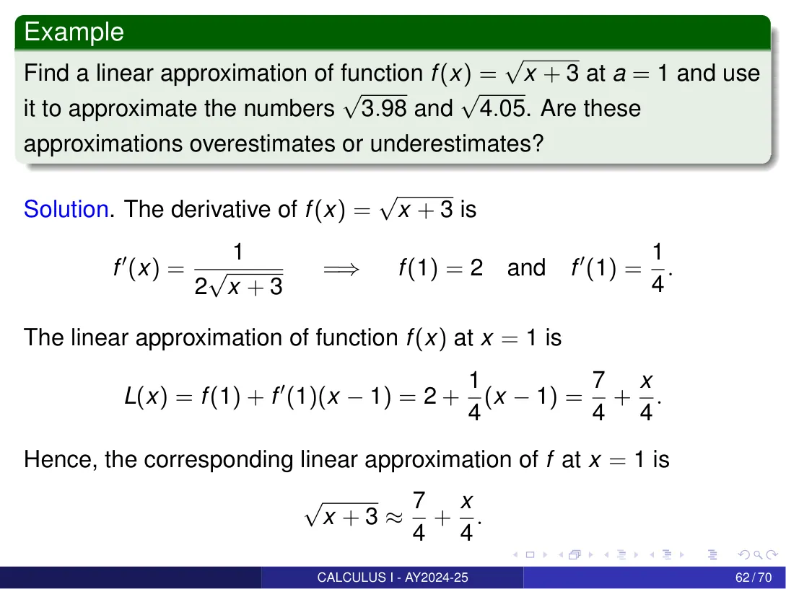
$f(x)=\sqrt{x+3}$: $f'(x)=\frac1{2\sqrt{x+3}}$, so $f(1)=2$ and $f'(1)=\frac14$. Then $L(x)=2+\frac14(x-1)=\frac74+\frac x4$. So $\sqrt{x+3}\approx\frac74+\frac x4$ near $x=1$.
$f(x)=\sqrt{x+3}$: $f'(x)=\frac1{2\sqrt{x+3}}$, nên $f(1)=2$ và $f'(1)=\frac14$. Khi đó $L(x)=2+\frac14(x-1)=\frac74+\frac x4$. Vậy $\sqrt{x+3}\approx\frac74+\frac x4$ gần $x=1$.
Using it: $\sqrt{3.98}$ and $\sqrt{4.05}$, and over- or underestimates · Áp dụng: $\sqrt{3.98}$, $\sqrt{4.05}$ và ước lượng thừa hay thiếu
★★★ Core · Cốt lõi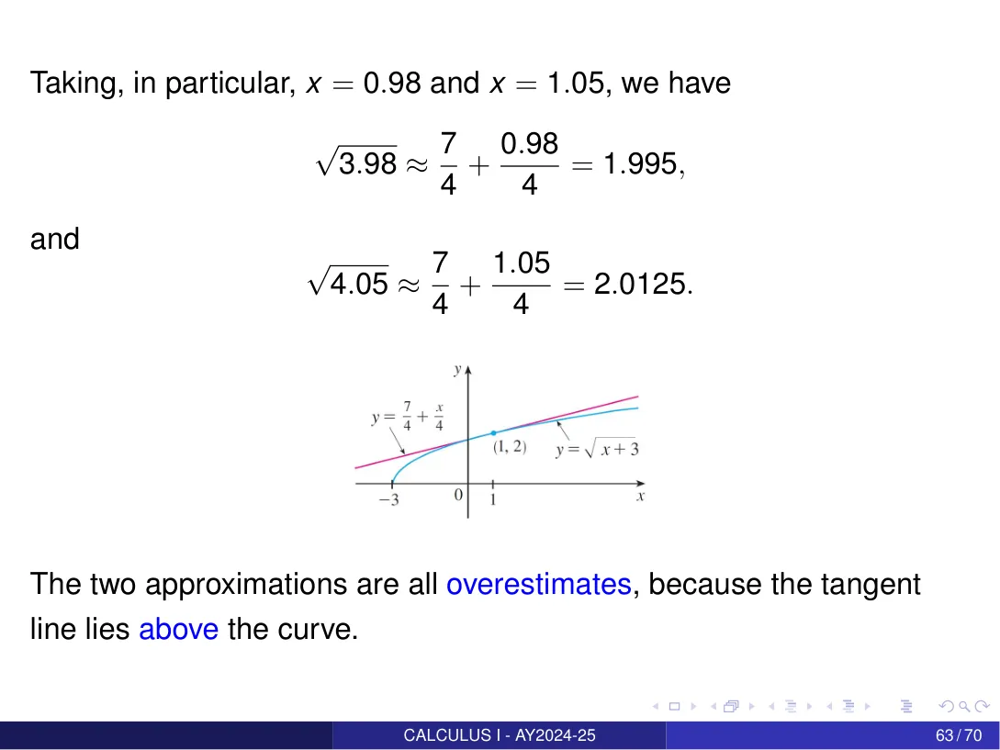
Take $x=0.98$: $\sqrt{3.98}\approx\frac74+\frac{0.98}4=1.995$. Take $x=1.05$: $\sqrt{4.05}\approx\frac74+\frac{1.05}4=2.0125$. Both are overestimates because the tangent line lies above the curve (the graph of $\sqrt{\ }$ is concave down). The true values are $1.99499\ldots$ and $2.01246\ldots$.
Lấy $x=0.98$: $\sqrt{3.98}\approx\frac74+\frac{0.98}4=1.995$. Lấy $x=1.05$: $\sqrt{4.05}\approx\frac74+\frac{1.05}4=2.0125$. Cả hai đều là ước lượng thừa vì tiếp tuyến nằm trên đường cong (đồ thị của căn bậc hai lõm xuống). Giá trị đúng là $1.99499\ldots$ và $2.01246\ldots$.
Approximate $\sqrt{9.1}$ with the linearization of $\sqrt x$ at $a=9$. Over- or underestimate?
Xấp xỉ $\sqrt{9.1}$ bằng tuyến tính hóa của $\sqrt x$ tại $a=9$. Ước lượng thừa hay thiếu?
Answer and solution · Đáp án và lời giải
Answer · Đáp án: $\approx3.01667$; an overestimate (true value $3.01662$)
$L(x)=3+\frac16(x-9)$, so $L(9.1)=3+\frac{0.1}6=3.01667$. The graph of $\sqrt x$ is concave down, so the tangent lies above it and $L$ overestimates.
$L(x)=3+\frac16(x-9)$ nên $L(9.1)=3+\frac{0.1}6=3.01667$. Đồ thị $\sqrt x$ lõm xuống nên tiếp tuyến nằm trên và $L$ ước lượng thừa.
Differentials · Vi phân
★★★ Core · Cốt lõi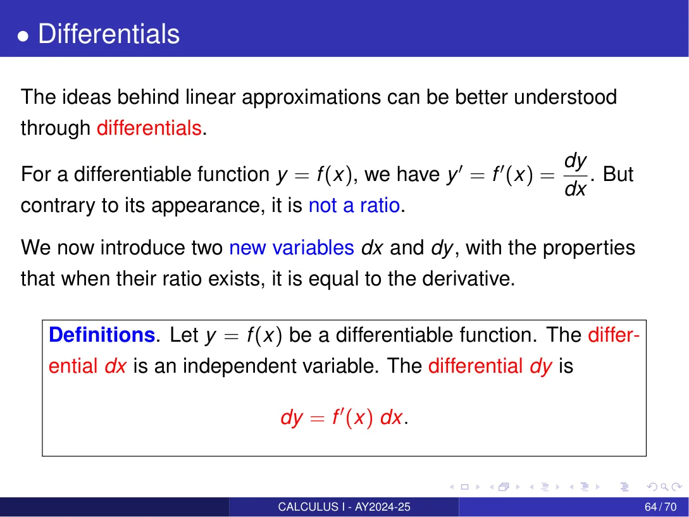
Linear approximation is clearer with differentials. For $y=f(x)$, $\frac{dy}{dx}$ is not (yet) a ratio, but we now define two new quantities: $dx$ is an independent variable and $dy=f'(x)\,dx$. When their ratio exists it equals the derivative.
Xấp xỉ tuyến tính dễ hiểu hơn qua vi phân. Với $y=f(x)$, $\frac{dy}{dx}$ chưa phải là một tỉ số, nhưng ta định nghĩa hai đại lượng mới: $dx$ là biến độc lập và $dy=f'(x)\,dx$. Khi tỉ số của chúng tồn tại thì bằng đạo hàm.
Geometric meaning: $\Delta x$ and $\Delta y$ · Ý nghĩa hình học: $\Delta x$ và $\Delta y$
★★ Important · Quan trọng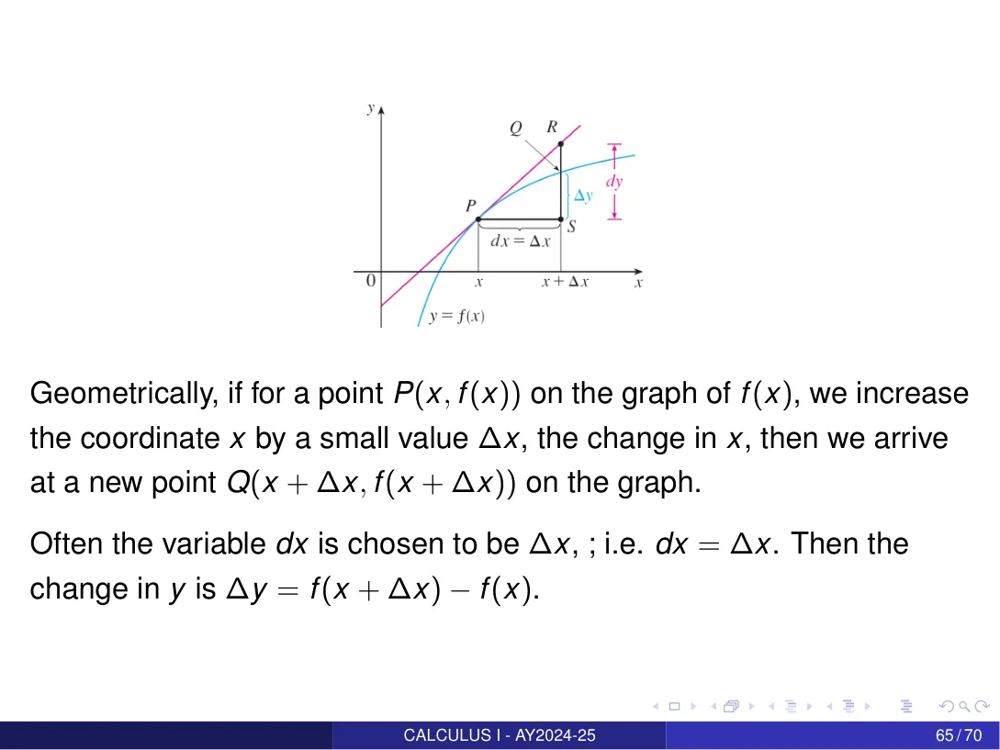
From $P(x,f(x))$ increase $x$ by $\Delta x$ to reach $Q(x+\Delta x,f(x+\Delta x))$. Usually we take $dx=\Delta x$. The true change of $y$ is $\Delta y=f(x+\Delta x)-f(x)$.
Từ $P(x,f(x))$ tăng $x$ thêm $\Delta x$ để tới $Q(x+\Delta x,f(x+\Delta x))$. Thường ta lấy $dx=\Delta x$. Độ thay đổi thật của $y$ là $\Delta y=f(x+\Delta x)-f(x)$.
$dy$ versus $\Delta y$ · $dy$ và $\Delta y$
★★★ Core · Cốt lõi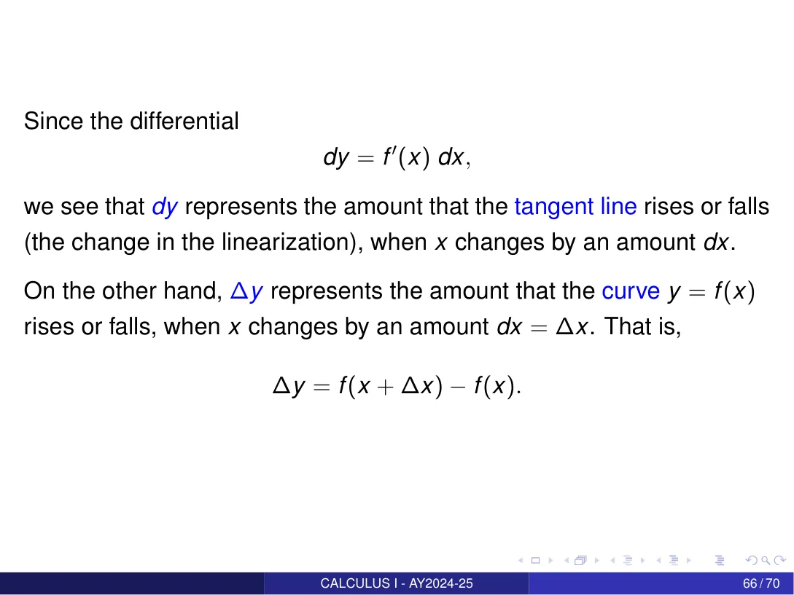
$dy=f'(x)\,dx$ is the amount the tangent line rises or falls when $x$ changes by $dx$; $\Delta y$ is the amount the curve rises or falls. They are close when $dx$ is small, and $dy$ is far easier to compute.
$dy=f'(x)\,dx$ là lượng mà tiếp tuyến đi lên hay đi xuống khi $x$ thay đổi $dx$; $\Delta y$ là lượng mà đường cong đi lên hay đi xuống. Hai lượng gần nhau khi $dx$ nhỏ, và $dy$ dễ tính hơn nhiều.
Example: comparing $\Delta y$ and $dy$, from 2 to 2.05 · Ví dụ: so sánh $\Delta y$ và $dy$, từ 2 đến 2.05
★★★ Core · Cốt lõi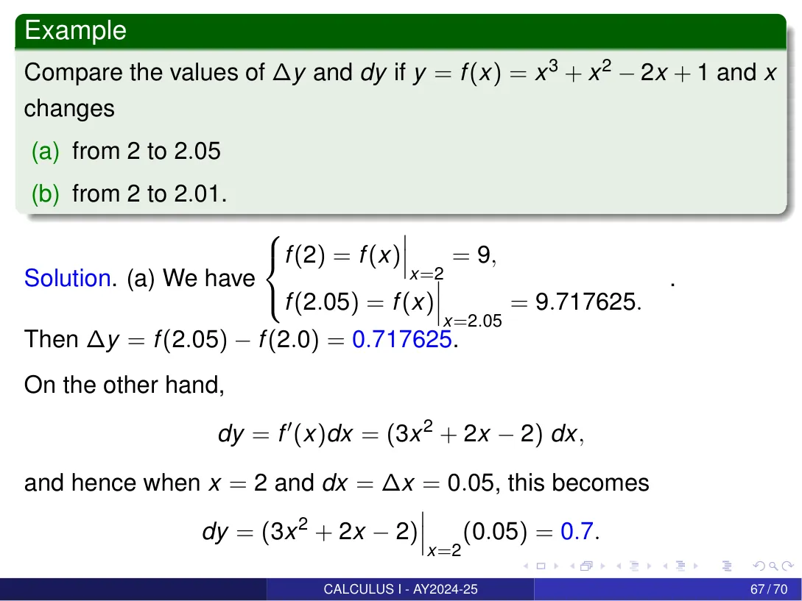
$f(x)=x^3+x^2-2x+1$. $f(2)=9$ and $f(2.05)=9.717625$, so $\Delta y=0.717625$. Differential: $f'(x)=3x^2+2x-2$, $f'(2)=14$, $dy=14\cdot0.05=0.7$. They differ by only $0.0176$.
$f(x)=x^3+x^2-2x+1$. $f(2)=9$ và $f(2.05)=9.717625$, nên $\Delta y=0.717625$. Vi phân: $f'(x)=3x^2+2x-2$, $f'(2)=14$, $dy=14\cdot0.05=0.7$. Hai giá trị chỉ lệch $0.0176$.
For $f(x)=x^3+x^2-2x+1$ check the slide's numbers: $\Delta y$ and $dy$ when $x$ goes from $2$ to $2.05$.
Với $f(x)=x^3+x^2-2x+1$, kiểm tra số liệu trên slide: $\Delta y$ và $dy$ khi $x$ đi từ $2$ đến $2.05$.
Answer and solution · Đáp án và lời giải
Answer · Đáp án: $\Delta y=0.717625$, $dy=0.7$
$f(2.05)=8.615125+4.2025-4.1+1=9.717625$, $f(2)=9$. $dy=f'(2)(0.05)=14(0.05)=0.7$.
$f(2.05)=8.615125+4.2025-4.1+1=9.717625$, $f(2)=9$. $dy=f'(2)(0.05)=14(0.05)=0.7$.
Example: from 2 to 2.01, and the comment · Ví dụ: từ 2 đến 2.01, và nhận xét
★★★ Core · Cốt lõi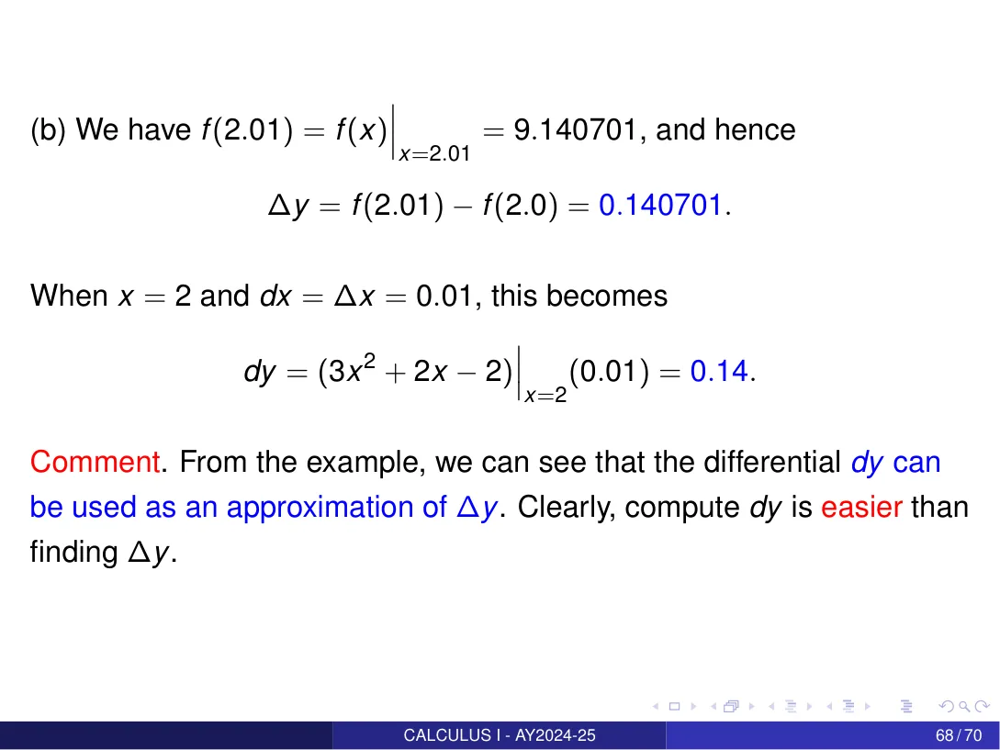
For $dx=0.01$: $f(2.01)=9.140701$, so $\Delta y=0.140701$, and $dy=14\cdot0.01=0.14$. The smaller $dx$ is, the better $dy$ approximates $\Delta y$. Comment on the slide: $dy$ can replace $\Delta y$, and it is much easier to find.
Với $dx=0.01$: $f(2.01)=9.140701$, nên $\Delta y=0.140701$, và $dy=14\cdot0.01=0.14$. $dx$ càng nhỏ thì $dy$ càng xấp xỉ $\Delta y$ tốt. Nhận xét trên slide: có thể dùng $dy$ thay cho $\Delta y$, và $dy$ dễ tìm hơn nhiều.
For $y=x^2$, compare $\Delta y$ and $dy$ when $x$ goes from $5$ to $5.1$.
Với $y=x^2$, so sánh $\Delta y$ và $dy$ khi $x$ đi từ $5$ đến $5.1$.
Answer and solution · Đáp án và lời giải
Answer · Đáp án: $\Delta y=1.01$, $dy=1$
$\Delta y=5.1^2-5^2=26.01-25=1.01$; $dy=2x\,dx=10\cdot0.1=1$.
$\Delta y=5.1^2-5^2=26.01-25=1.01$; $dy=2x\,dx=10\cdot0.1=1$.
Example: error in the volume of a sphere · Ví dụ: sai số thể tích của quả cầu
★★★ Core · Cốt lõi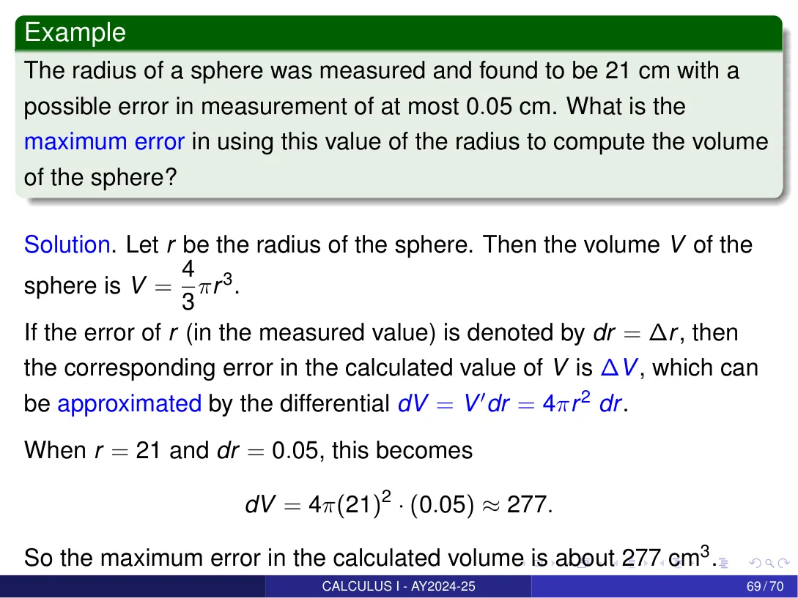
A sphere's radius is measured as $21$ cm with error at most $0.05$ cm. Then $V=\frac43\pi r^3$ and $dV=4\pi r^2\,dr=4\pi(21)^2(0.05)\approx277$ cm$^3$. So the volume may be off by about $277$ cm$^3$: that is the maximum error estimate. (Relative error: $\frac{dV}V=3\frac{dr}r\approx0.7\%$.)
Bán kính quả cầu đo được $21$ cm với sai số tối đa $0.05$ cm. Khi đó $V=\frac43\pi r^3$ và $dV=4\pi r^2\,dr=4\pi(21)^2(0.05)\approx277$ cm$^3$. Vậy thể tích có thể lệch khoảng $277$ cm$^3$: đó là ước lượng sai số tối đa. (Sai số tương đối: $\frac{dV}V=3\frac{dr}r\approx0.7\%$.)
A cube's edge is measured as $10$ cm with error at most $0.1$ cm. Estimate the maximum error in its volume with differentials.
Cạnh một hình lập phương đo được $10$ cm với sai số tối đa $0.1$ cm. Ước lượng sai số tối đa của thể tích bằng vi phân.
Answer and solution · Đáp án và lời giải
Answer · Đáp án: $30\ \mathrm{cm^3}$
$V=a^3$, $dV=3a^2\,da=3\cdot100\cdot0.1=30$ cm$^3$.
$V=a^3$, $dV=3a^2\,da=3\cdot100\cdot0.1=30$ cm$^3$.
End of Chapter 2 · Kết thúc Chương 2
★ Context · Bổ trợ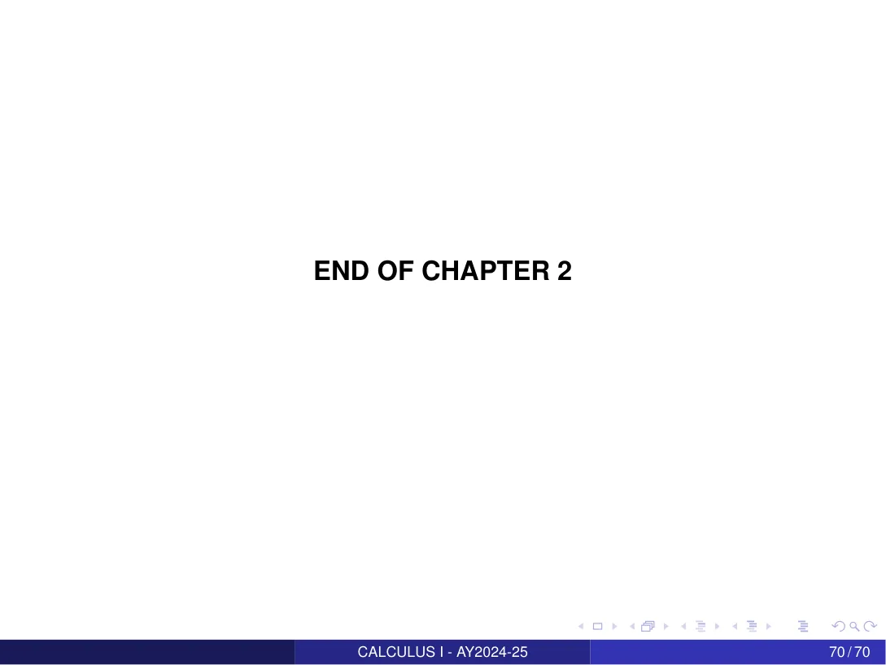
End of Chapter 2. Recap: the derivative is a limit (Lecture 3); the rules (product, quotient, chain) compute it fast; implicit differentiation, related rates and linearization are the three main applications of the chain rule and the tangent line.
Kết thúc Chương 2. Tóm tắt: đạo hàm là một giới hạn (Bài 3); các quy tắc (tích, thương, hàm hợp) tính nó nhanh; đạo hàm ẩn, tốc độ liên quan và tuyến tính hóa là ba ứng dụng chính của quy tắc hàm hợp và tiếp tuyến.